지역
"영농형 태양광 지어 놓고 전기를 못 보낸다"…전남광주시의회, 2028년 말 준공 서영광변전소 앞당기라 주문
박원종 위원장, 영광 월평마을 등 계통 접속 지연 사례 제시…시 "한전과 협의 중, 햇빛소득마을은 ESS·가상발전소 연계 컨설팅"

대전 한밭종합운동장 공영주차장 태양광, 국비 공모 뽑히고도 지방비 없어 포기…시의회 "사업비·용량 자료마다 달라"
박은희 시의원, 시설관리공단 행정사무감사서 "총사업비 6억 원 기준 서류 금액 제각각"…투명한 업체 선정 절차 주문

울주군 구영공원 공영주차장 태양광 17일 착공…20m 앞 아파트 주민 "빛 반사 우려, 철회하라"
군 "반사율 5.3% 패널·기울기 9도, 절차 모두 지켜"…주민 "군이 입법예고한 주택 이격 200m의 10분의 1"

재생에너지 자립률 1.2% 여수, 태양광 주택 이격거리 300m→200m로…도로 이격 100m 규제는 없애 17일 본회의
상위법령 9월 18일 시행 두 달 만에 도시계획 조례 개정안 상임위 원안 가결…"100m까지 더 낮추자" 요구에 시는 "민원 많아 단계적으로"

김해 공영주차장·학교·산단에 태양광 늘리고 수익은 시민에게…시의회 토론회서 "설치 가능 부지부터 조사하자"
1,000㎡ 넘는 공영주차장 태양광 의무화 앞두고 16일 시민토론회…김해, 경남 18개 시·군 중 전력 사용량·주차장 태양광 잠재량 모두 2위

전북농업기술원, 농업진흥구역에 영농형 태양광 설치하며 농지법 절차 빠뜨려…도 감사서 12건 행정상 처분
2023년 실증 설비 세우며 농지 일시사용 협의·개발행위허가 안 받아…연구실 안전관리 부실·외부 강의 미신고로 219만5,000원 회수

안성시 '공유부지 주민참여형 태양광', 참좋은 지방자치 정책대회 수상…체육시설·공영주차장에 시민 협동조합 발전소
13일 국회 사랑재에서 시장·군수·구청장협의회장상…인근 마을 참여·수익의 마을복지 활용을 심사 기준으로, 앞으로 가상발전소로 관내 기업에 싼 전기 공급 구상

인천 영종구, 내년 주택·상가 등 227곳에 태양광·지열 설치비 최대 80% 지원…'재생에너지 융복합지원사업' 국·시비 26억2,000만 원 확보
총사업비 41억9,000만 원 중 보조금 35억3,000만 원, 태양광 192곳·태양열 7곳·지열 28곳…내년 2월 본격 추진

아산시, 태양광 주거지 이격거리 500m→200m로 줄이고 도로 이격 없애…주민 동의 사업은 더 완화
도시계획 조례 개정, 진입도로 포장·축사 등 건축물 위 태양광 기준도 풀어…햇빛소득마을 8곳 추진 중, 삼성 투자 따른 전력 수요 대비

광주 광산구, 온실가스 줄인 아파트 6곳에 3,600만 원…LED 교체·태양광 설치 지원
탄소중립포인트제 가입률·주민 실천 평가해 선정, 500세대 이상 부문 대상 신창도시공사 국민임대아파트 1,100만 원

충청권 지나는 국가기간 송전망 27개 사업…"전력은 수도권으로, 누적 부담은 지역에" 주민 요구 커져
전국 99개 중 대전·세종·충남 관련 27개, 새만금2~신서산 약 121㎞ 등 2030~2036년 준공 목표…정부 '철탑 최대 2,214기 감축' 방안에도 마을별 부담·지중화 구간 기준은 아직

보령시 "서해안 에너지고속도로 신규 송전선로 원칙적 반대"…청라·미산·성주면은 345kV 3개 노선 모두 지나
철탑 270기·130기·230기 계획…탈석탄 지역 송전 여유 활용·지산지소·경과지 계통연계 우선권 요구

옹진군수 "섬 재생에너지, 계통 연결이 가장 큰 과제"…영흥 내7리 햇빛소득마을 재추진
백령도 7월 정전 2,600가구 최대 8시간…해상풍력 배후항만·송배전망 준비 늦어 "정부·인천시·군 함께 풀어야"

나주호 수상태양광 시행자 "20년간 373억 원 지역 환원"…반대 측은 "둘레길 경관 지켜야"
97.8MW 가운데 19.56MW를 상생 기여분으로, 다도면 주민 1,700명 대상…서산 대호호는 누적 발전수익 53억8,700만 원

음성군 공영주차장에 태양광…한전KDN·충북개발공사 SPC가 짓고 수익은 취약계층 지원에
10일 3개 기관 업무합의, 사업비는 특수목적법인 '충북솔라링크'가 조달해 군 재정 부담 줄여

美 캘리포니아 휴니미항, 913kW 주차장 태양광 가동…항만은 초기 비용 없이 연 140만kWh
차량 대기 구역 위에 지붕형 발전소…250가구 쓸 전기, 2030년 항만 운영 무배출 목표에 보탬

울산 750MW 부유식 해상풍력 '문무바람' 모회사, 25일 청산 여부 주총…자금 확보가 관건
스웨덴 헥시콘, 이사회는 존속 제안했지만 '운영자금 조달 중대한 불확실성' 명시…감사인은 의견 내지 않아

영국 코번트리시, 에온과 그린벨트에 25MW 태양광 추진…시의원들 "에온이 얼마 버는지 공개하라"
7,000가구분 전기·사업비는 에온 부담, 시는 소유 땅 임대료와 전력 구매 검토…두 번째 단지 부지도 물색
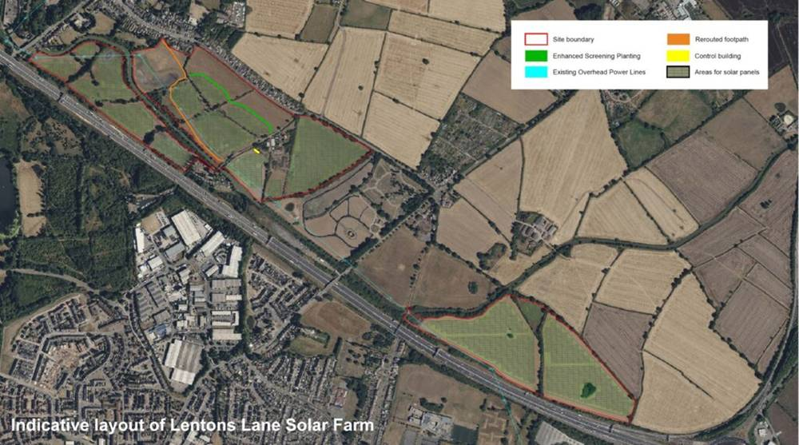
전북도, 계통 포화에 ESS·가상발전소 사업모델 찾는다…"햇빛소득마을도 접속 막혀"
LS일렉트릭 등 기업·한전 전북본부와 간담회…유연접속·선로 ESS 정책을 도내 사업과 잇는 방안 논의

함안군, 지방공사와 손잡고 공영주차장 3곳에 태양광…2027년 착공·2030년 준공 목표
주차구획 1,000㎡ 넘는 공영주차장 재생에너지 의무화 대비…군은 행정 지원, 공사는 설치·운영 맡아
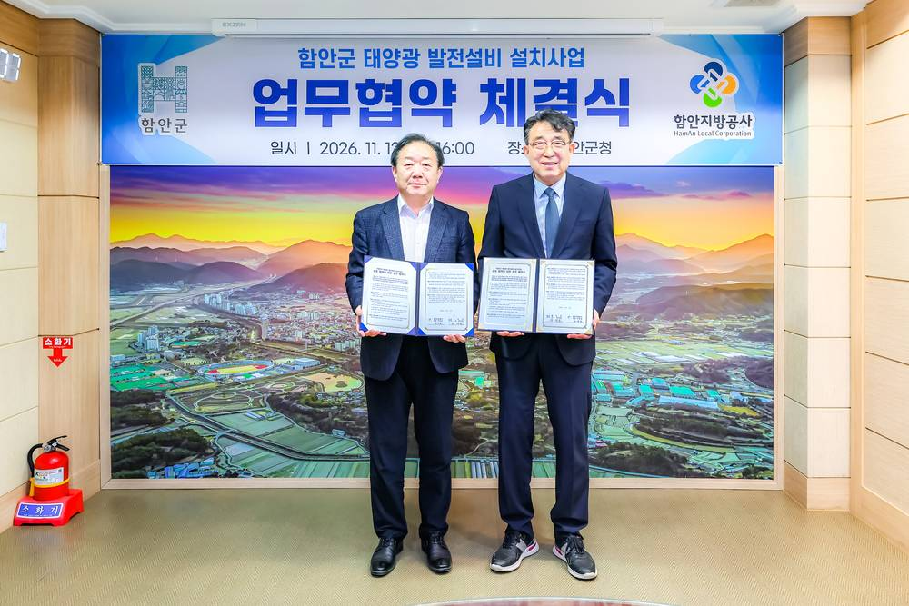
박찬대 인천시장, 오스테드 경영진 만났지만…어민들 "협의체 끊고 시장만 독대" 반발
1.47GW 인천해상풍력 허가 3년째 답보·입찰 보류…환경단체 "전담조직부터", 시 "구체 논의 없던 인사 자리"

전북도, 꽉 막힌 계통 뚫으려 ESS·가상발전소 기업과 손잡는다…"햇빛소득마을도 접속이 관건"
LS일렉트릭·한전 전북본부 등과 사업모델 간담회, 송·변전설비·ESS 확충 과제는 국가계획 반영 건의
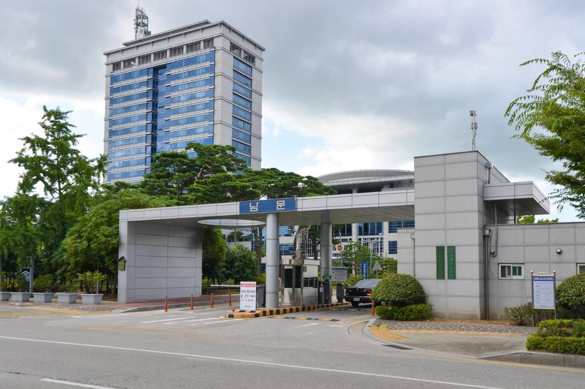
함안군, 공영주차장 3곳에 태양광…지방공사가 설치·운영 맡아 2030년 준공 목표
함주공원·함안스포츠센터·칠원 구성지구 대상, 주차구획 1,000㎡ 넘는 공영주차장 설치 의무 앞서 대응
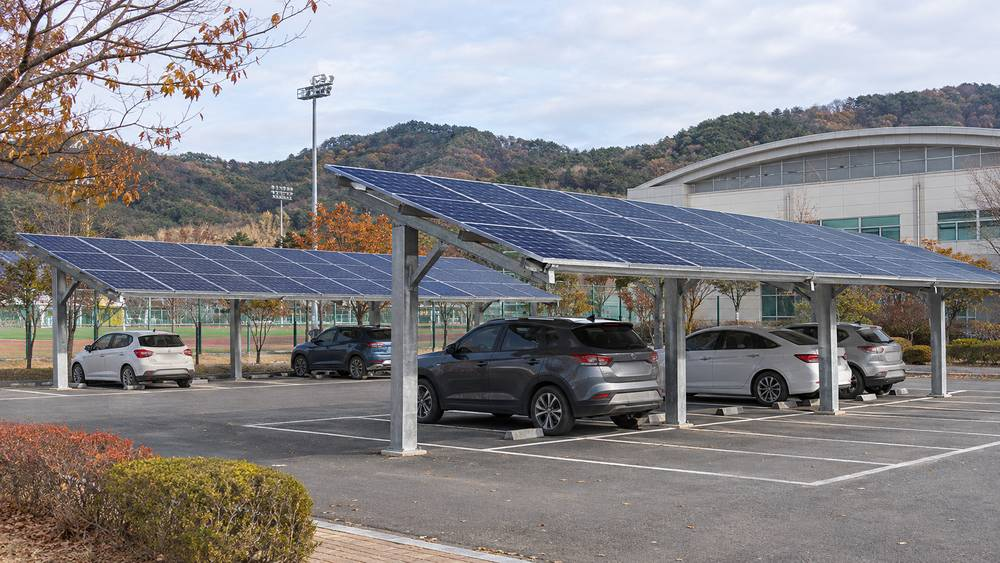

日 프로축구 J1 미토, 버려진 농지에 영농형 태양광…道の駅 전기 30% 대고 2년째 흑자
이바라키현 시로사토정 2,000㎡에 67.2kW, 20년 고정가 전력구매계약…J리그는 클럽당 최대 1,000만 엔 재생에너지 지원

서울에너지공사, 흑자 돌아섰지만 고객만족도는 79.4점…시의회 "LNG 의존 벗어나 주차장 태양광 넓혀야"
위성찬 서울시의원 행정사무감사서 지적…공영주차장 40곳 입지조사 차질 없이, 대형 민간 주차장과도 협의 주문
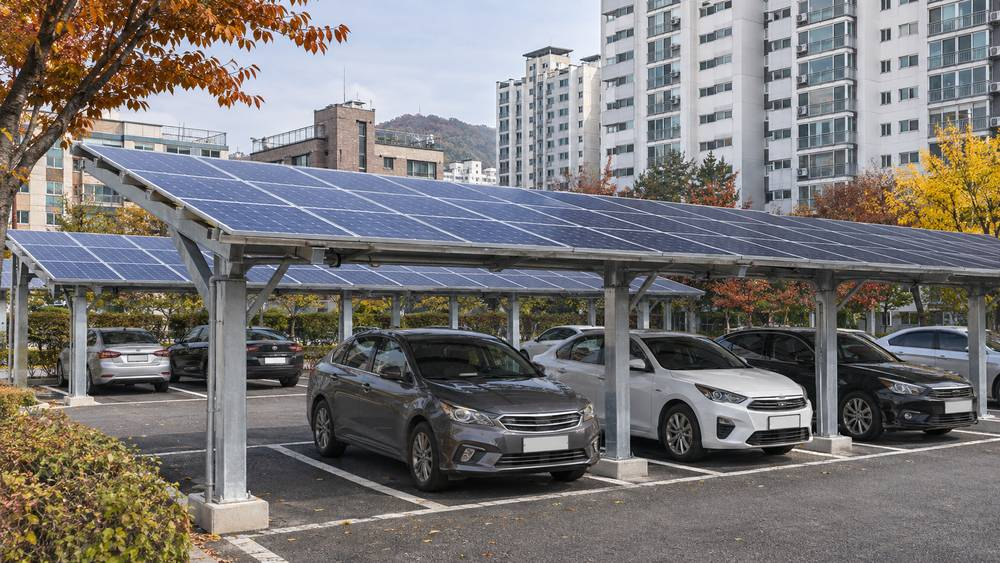
전남광주도시개발에너지공사 본사 어디로…전남개발공사 노조 "무안에", 광주도시공사 노조 "조례도 안 됐는데 시기상조"
22개 산하기관 11곳으로 통합 추진…7개 기관 조례안 다음 달 16일까지 정례회에서 심사

경남 학교 366곳 태양광 497기, 작은 건 3kW·큰 건 563kW…도의회 "188배 격차, 저용량·노후 설비 손봐야"
평균 68kW…경남도의회 교육위, 행정사무감사 마지막 날 교육청에 개선 방안 요구
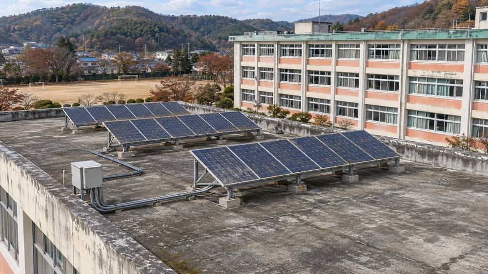
제주 해상풍력 목표 10GW→5GW로 낮췄지만…도의회 "추자 전력 전남행, 도민 이익은 어디로"
위성곤 지사 "새 단지는 도가 정하고 주민 동의 최우선"…전송망 경로·연관 산업 육성 놓고 도정질문 공방

美 쿠야호가 카운티, 매립지 태양광 넓히려 750만 달러 빌린다…지자체 협의체 NOPEC이 어음 매입
원금은 연방 세액공제로 갚을 계획, 돈 늦으면 재산세 과세권으로 담보

남원시의회 노현이 의원, 공영주차장 태양광 수익 시민에게 돌리는 조례 발의 추진…토론회서 협동조합 모델 논의
10일 '공영주차장 햇빛에너지 주민소득화 방안 토론회'에 시민·전문가 30여 명…전주시 에너지센터·환경운동연합·공동체지원센터 발표

필리핀 케손시, 2년 안 돼 태양광 용량 73% 늘려 58.55MW…시청·공립학교·시립병원 지붕부터 깔았지만 가정 보급은 1%도 안 돼
싱크탱크 ICSC 위성·기계학습 분석, 95% 넘게 지붕형…지붕 잠재량 4,916MW, "가정·소상공인 초기 비용 덜어 줄 금융·인허가 필요"
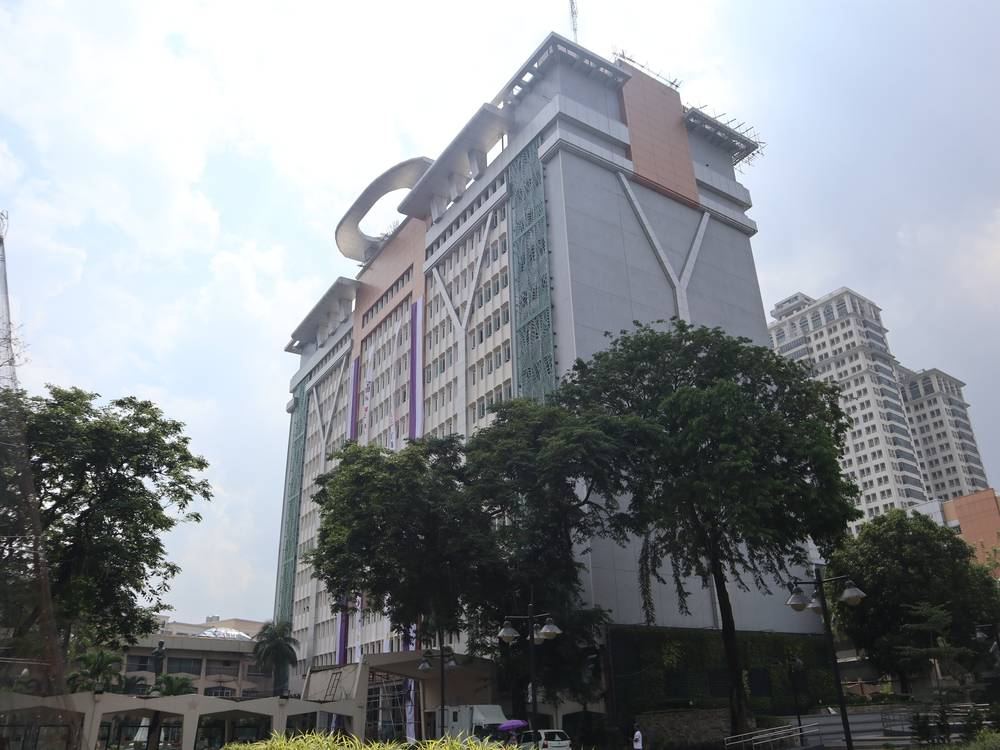
서울에너지공사 지난해 태양광 사업 집행률 77%…최두호 시의원 "노후 설비 교체·도심 태양광 확대 연차별 실행계획 내라"
공사 "운영 끝난 발전 부지 넘겨받아 고효율로 바꾸고 공영주차장 태양광 단계적 확대"…전기차 충전기 위탁업체 임금 체불로 관리 하루 멈춘 일도 질타
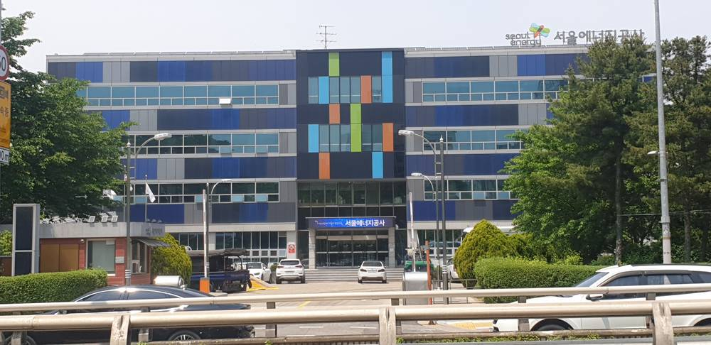
강원도 108억 원 현물출자한 대관령 풍력단지, 연 순이익 3억 원 그쳐…도의회 행감서 "경제성·주민 피해 다시 따져야"
강원개발공사 운영 단지 예상 매출 21억 원…유지보수·인건비 오르면 수익 더 줄 수도, 소음·저주파·그림자 깜박임 등 사회적 비용도 거론

서울 학교 3곳 지붕 시민햇빛발전협동조합 태양광, 사용료 1,470만 원 밀려…학교마다 대응 제각각
서울시의회 행정사무감사서 지적…인헌고는 사용허가 취소, 상원초는 독촉 공문만 11차례, 협동조합형 20개교·민간형 12개교 안전점검 요구

해남 혈도 간척지 400MW 국내 최대 태양광, 착공식 석 달 지나도 공사 흔적 없어…주민 160여 명 "매립면허 무효" 행정소송
주민 몫은 발전사업비 4%까지…해남 간척지 대형 태양광 11건 1,785MW, 군은 "연말까지 이익 환원 세부 지침"

여수시, 유인도 40곳 에너지 전환 '2030 RE40' 추진…2027년부터 섬에도 공공부지 태양광·햇빛소득마을
계통 연계 섬 25곳·미연계 섬 15곳 맞춤 이행안…디젤 발전 줄여 섬 주민 전기요금 부담 낮춘다

일본 규슈, 영농형 태양광 5년 새 4.4배…전국 설치 농지 24%는 수확 2할 넘게 줄어 정부가 허가 조건 강화
후쿠오카 야메 차밭은 차광 시설에 패널 얹어 월 7만~8만 엔…농수산성 '차광률 30% 미만·연 판매 50만 엔 이상' 새 조건에 업계 "일률 규제 지나쳐"

시흥형 RE100, 산단 소상공인 1,068곳이 전자투표로 지붕 태양광 결정…20년 햇빛소득 180억 원 기대
스틸랜드 1만2,613kW·찬성 86%, 시민협동조합 주차장 발전소 394kW 가동…태양광 허가용량 2023년 말 44MW→129MW
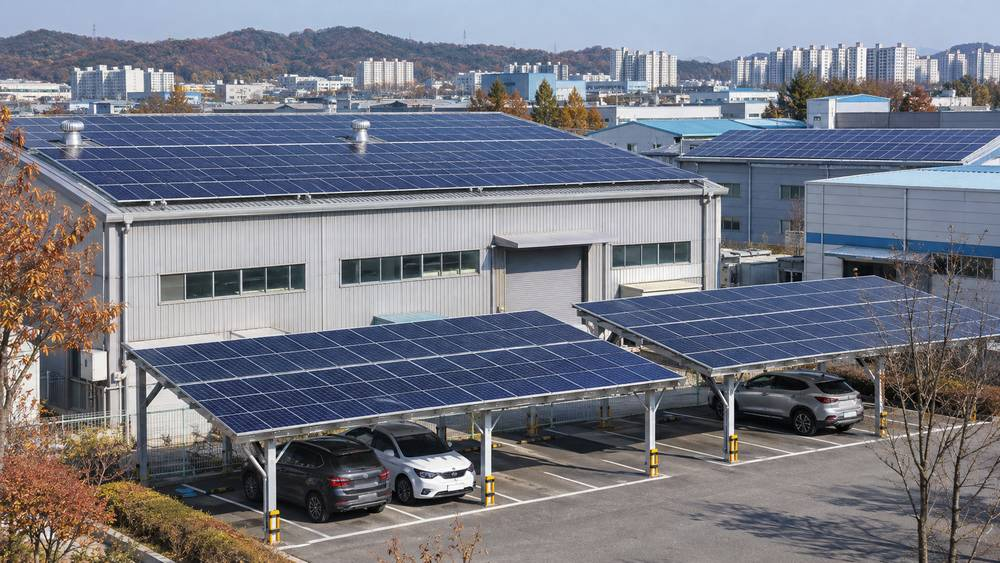
콜로라도 첫 플러그인 태양광 비영리단체 출범…세입자·관리조합 규약 보호 주 법 시행 앞두고
솔라 액세스 콜로라도 9일 출범…HB26-1007, 설치를 합리적 이유 없이 막지 못하게 규정
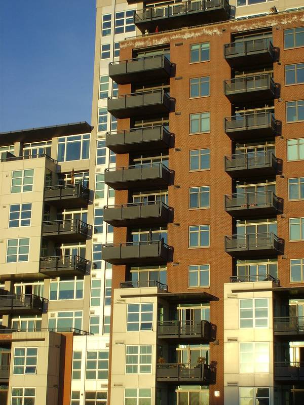
BHESCo, 이스트본 전역으로 '태양광 동네' 사업 확대…전기요금 최대 25% 낮추기 목표
주택 소유자·세입자·지역 사업장 모두 대상…오프젬 에너지 보상 기금으로 운영

셰틀랜드 지역에너지 활동가들 "스코틀랜드 지역에너지 지원금, 여러 해에 걸쳐 주도록 바꿔 달라"
가을에 배정받은 CARES 자금은 이듬해 3월 중순까지 써야…큰 사업을 쪼개 공사가 겨울로 밀려


독일 '에너지 셰어링 연합', 이웃끼리 태양광 전기 나누기 막는 걸림돌 없앨 11가지 제안…"배전망 회사에 처리 기한과 불이익을"
6월부터 법으로 허용됐지만 정산 절차·스마트계량기 보급 지연·높은 비용에 막혀…협동조합·시민에너지 단체엔 "너무 복잡하거나 수지가 안 맞는다"

'맨발 대학' 설립자 벙커 로이 별세…학교 문턱도 못 간 시골 여성들을 태양광 기술자로 길러 낸 81년
1972년 인도 라자스탄 틸로니아에 세운 학교에서 배운 여성들이 고향 마을로 돌아가 태양광 조명 설치·운영·정비…여러 나라 여성들도 와서 배워

아일랜드 코크 이웃들, '솔라 메할'로 지붕 태양광 함께 설치…먼저 한 단지는 가구당 한 해 약 1,000유로 아껴
이웃이 함께 큰일을 치르는 전통 '메할(meitheal)'을 태양광 공동구매에 접목…자원봉사 모임 '노스사이드 솔라', 단지마다 다시 쓸 수 있는 방식 만들어 북부 지역에 넓힐 계획
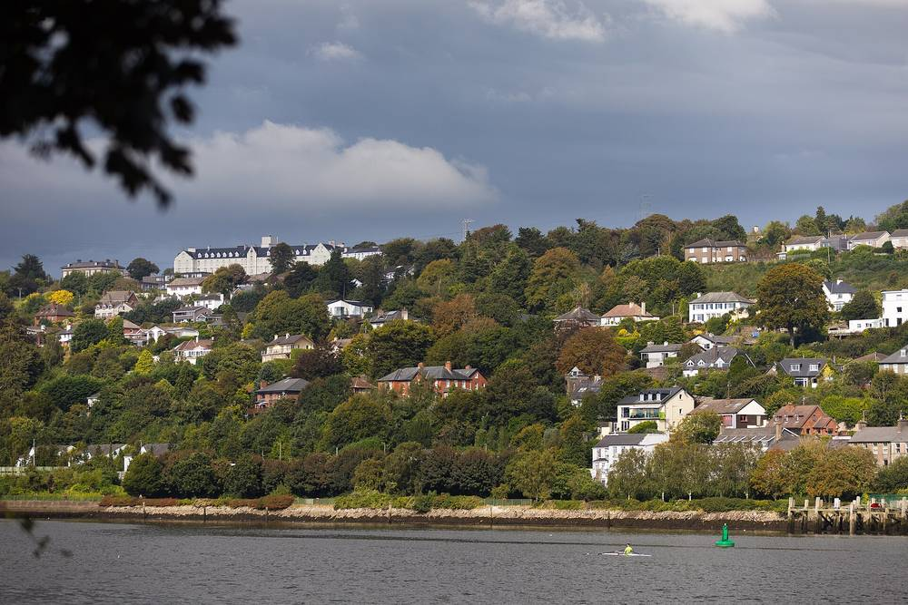
충북개발공사, 음성군 공영주차장에 첫 공공주도형 태양광…발전 순이익 50% 20년간 군에 돌려준다
한전KDN과 함께 세우는 특수목적법인 '충북솔라링크'가 캐노피형 설비 운영, 군은 부지·행정 지원…'충북형 표준모델'로 도내 다른 시·군에 넓힐 계획
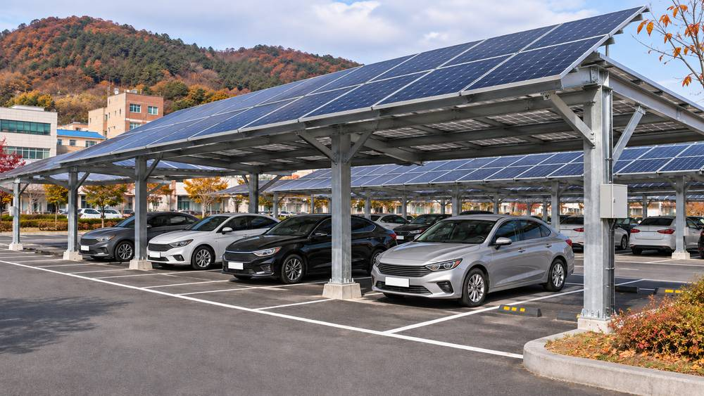
호주 연구진 "재생에너지 지역 혜택, 반짝 지원 말고 오래 남는 유산으로"…지역기금 2030년 2억1,300만 호주달러 전망
시드니공과대 분석 "지역 고용 효과 아직 뚜렷하지 않아"…원주민 지분·수익 5% 공유 입찰, 지역 훈련, 영농형 태양광 계획 인정 제안

일본 야마가타 사카타서 '지역에 뿌리내린 영농형 태양광' 심포지엄…"매일 전기 짜 주는 젖소 같다"
요네자와 농민 35아르 논에 눈 고장용 수동식 패널 670장…원전 사고로 떠났던 후쿠시마 농민은 영농형으로 농업 복귀, "사람 없는 중산간지에 사람 부를 가치"
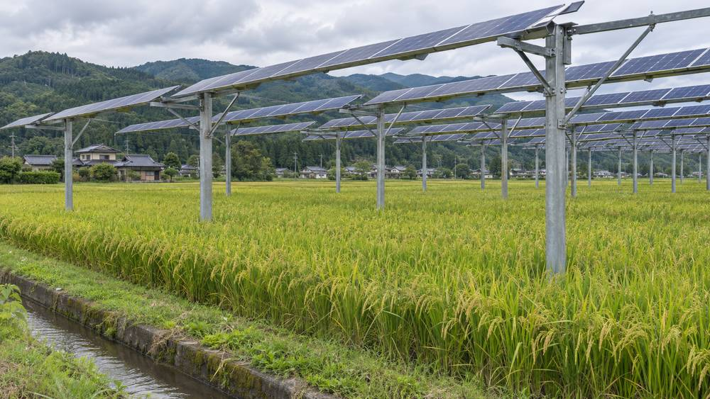
일본 사가시, 시가 52% 출자한 지역 전력회사 세워…청소공장 전기를 공공시설 113곳에 직접 판다
자본금 5,000만 엔 중 시 2,600만 엔·민간 6개사 400만 엔씩…연 약 1만6,000MWh 판매, 시 밖으로 새던 전기요금 지역에 남긴다

대전시, 17일 재생에너지 정책 포럼…'태양광 가치를 지역과 나누는' 시민 참여형 모델 찾는다
세계태양광총회 특별세션으로 에너지자립마을·산단 지붕 태양광 사례 발표…에너지연·한전KDN과 분산에너지 협약, 특화지역 지정 기반으로

불가리아 소피아 시 소유 지역난방 회사 위기…시장은 '양허가 유일한 해법', 사회당은 '35년 넘길 수 없다'
열교환소 286곳 고장으로 멈춰 동부 소피아 난방·온수 끊겨…시의회, 19일 경영진 청문 뒤 정상화 대책 표결
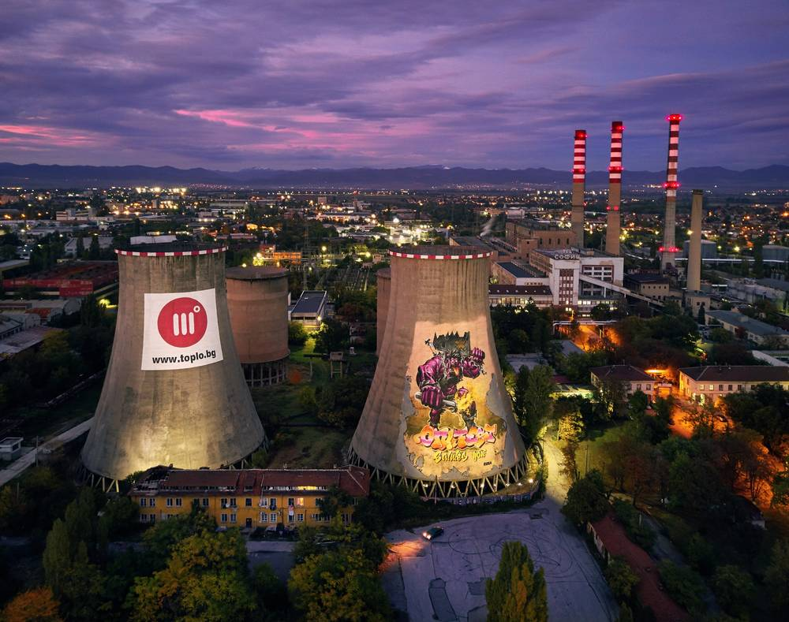
동서발전·고양시, 일산호수공원 공영주차장 태양광 협약…분산에너지 특화지역 계획도 함께
주차 기능 유지한 경관특화형 모델 개발해 관내 확산, 일산 열병합발전소 현대화사업엔 지역업체 우선 참여…용량·사업비·시민 참여 여부는 안 나와
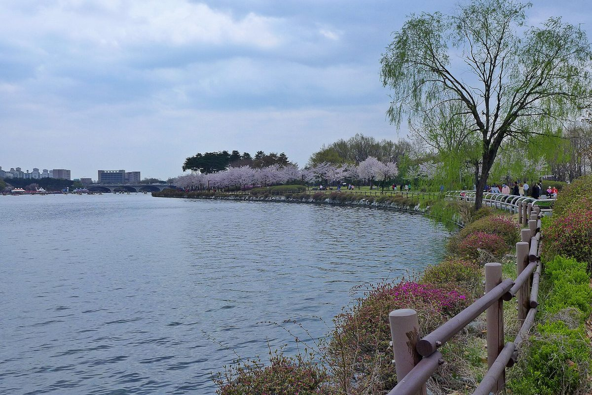
한전KDN·홍성군·충남개발공사, 공공 유휴부지 '공공주도형 태양광' 협약…발전수익은 에너지 취약계층 지원에
홍성군은 부지 발굴·행정 지원, 공사·한전KDN은 기획·구축·운영…8월 충남개발공사 협약에 홍성군 합류, 부지·용량·사업비는 아직 안 나와
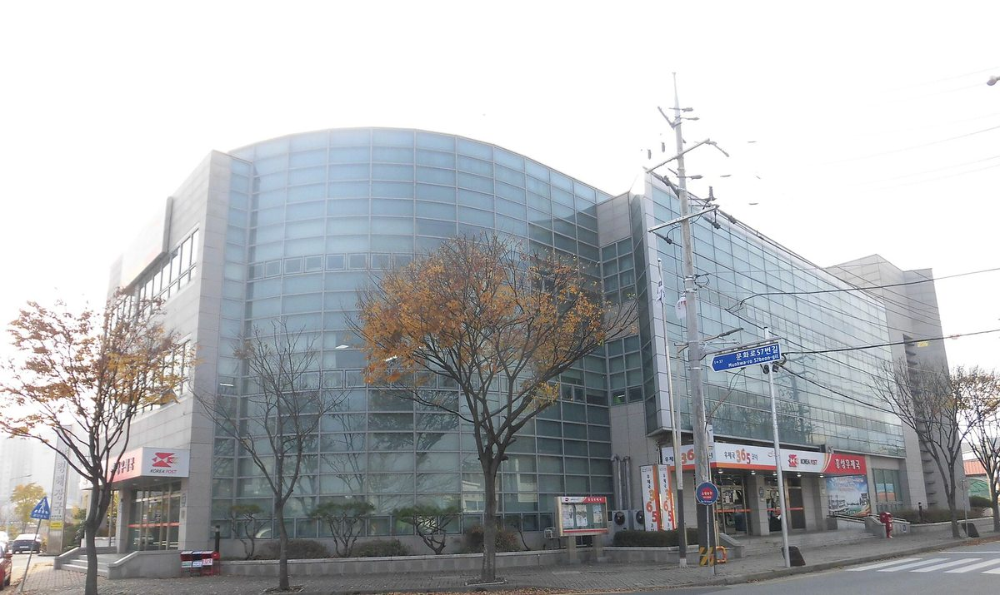
봉화 명호면 고계1리, 농촌 RE100 실증마을로…3년간 10억 원 들여 주민 협동조합과 마을발전소
농식품부 공모에 뽑혀 국비·지방비 5억 원씩…주택·농산물 가공시설 태양광과 에너지 진단까지, 발전 수익은 취약계층 지원·마을 공익사업에
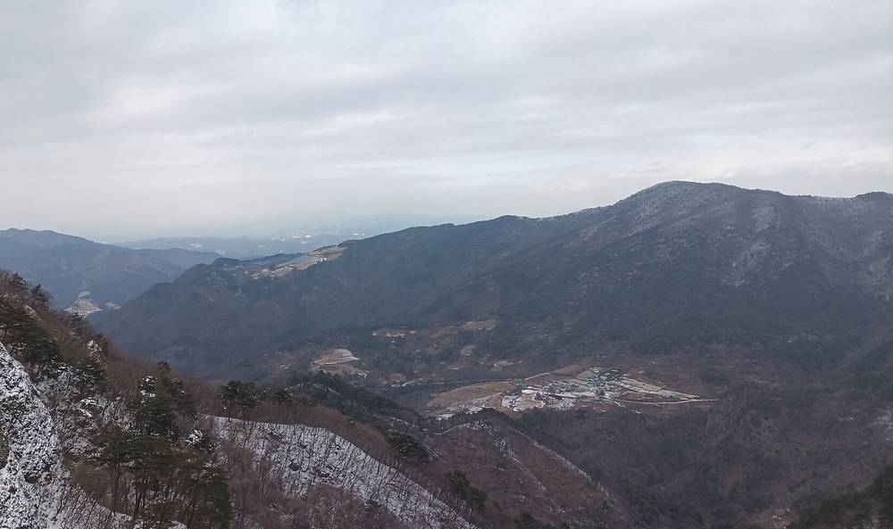
호주 캔버라 최대 배터리 250MW 상업 운전…개발사, 15년간 수익 50%를 준주 정부와 나누고 지역 단체 9곳에 50만 호주달러
준주 정부가 건설을 받쳐 주고 운영 수익 절반을 돌려받아 탈탄소 재원으로…최대 수요 때 캔버라 3분의 1에 2시간 전기, 2045년 탄소중립 겨냥
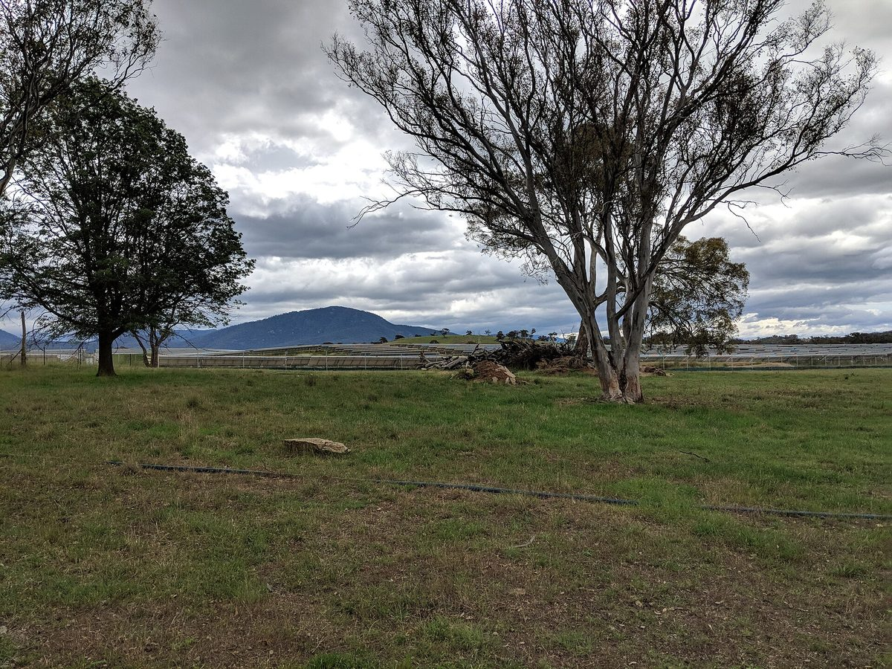
그리스 필리시, 시 태양광 전기로 저소득 1,000가구 무료 전기 이어 대학생 가정 1,000곳 넘게로 넓혀…학업 기간 4~6년
2022년 이후 입학해 재학 중인 학생의 가족 집이 대상, 의대 6년·공대 5년·일반 대학 4년…12월 21일 첫 무료 전기 바우처, 세부 조건은 곧 발표
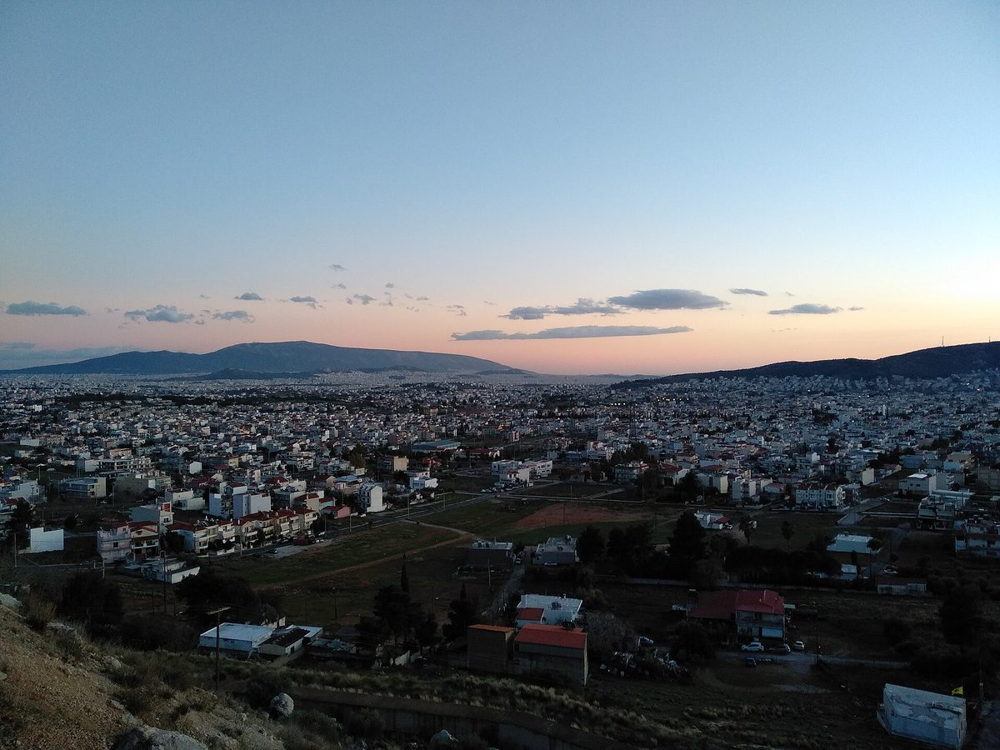
이탈리아 움브리아주, 재생에너지 발전소 받는 지자체 '환경 보상금' 계산 기준 의결…국가법이 정한 기대 발전 수익 1~4%의 산정 방법 마련
운전 시간·연 발전 가능량(MWh)·전력시장(GME) 지표로 발전소 수명 전체 수익 추정…보상금은 지자체 소유 설비·효율화·지자체가 참여하는 재생에너지공동체에 우선 쓰도록
영국 정부, '에너지 독립 법안' 하원 제출…새 재생에너지 사업에 지역 지분 최대 20% 제안 의무화할 길 열어
5MW 넘는 새 육상풍력·지상 태양광은 지역사회 이익 협약 맺어야, 정부 잠정안은 풍력 MW당 연 5,000파운드·태양광 700파운드…지분 제안 대상은 1MW 이상으로 낮출 수 있게, 비율·금액은 하위 법령에서 확정
미국 매사추세츠 크랜베리 습지 위 영농형 태양광 2곳, 패널 아래 두 번째 수확…땅·설비는 개발사 소유, 영농형엔 1kWh당 9센트 더 줘
킹스턴 4.4MW(배터리 13.5MWh)·플리머스 1MW, 농사 그만두려던 농민 땅을 개발사가 사들여 공동체 태양광으로 전기 판매…습지에 맞춰 기초 깊게 박고 패널은 10피트 높이에
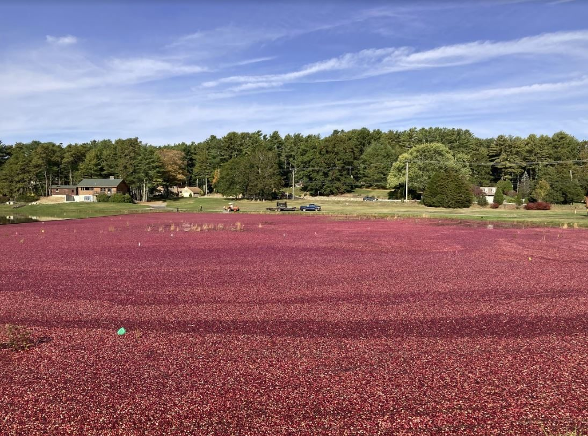
네덜란드 레이우아르던시, 새 주거지구 미덜세이에 '100% 공공 소유' 열망 직접 짓겠다고 제안…새집 1,600채 넘게 공급
붐비는 전력망 부담 덜어 주택 공급 일정 지키려는 구상…요금은 정부 상한보다 고정 20%·변동 5% 낮게, 시의회 11월 25일 결정
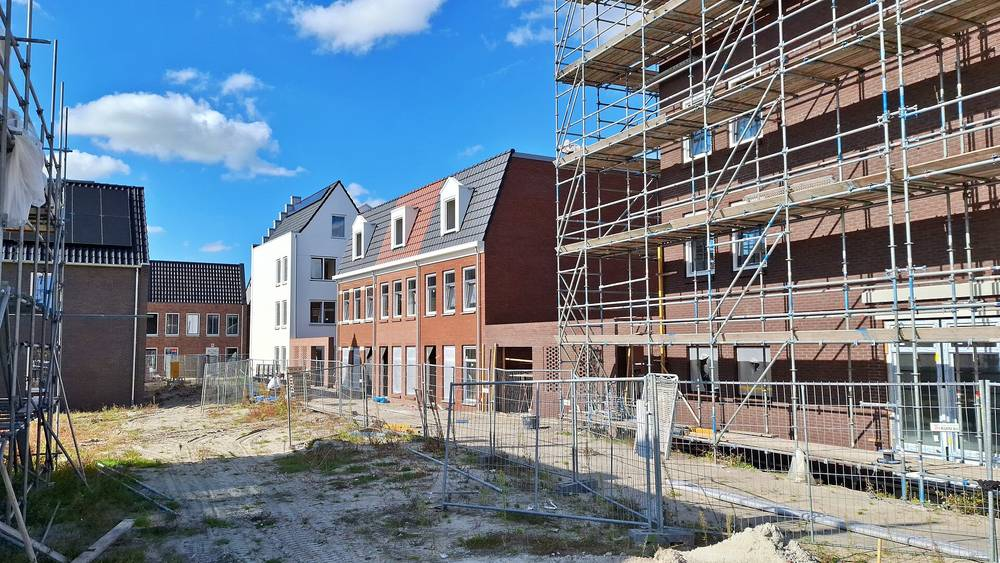
강물로 만든 전기 수익이 시 살림으로…스웨덴 셸레프테오, 시 소유 에너지 공기업 앞세워 수력 2.7TWh로 산업 유치
지역 소비량 1.5배 전력으로 배터리·친환경 항공연료 산업 끌어와…노스볼트 파산 뒤 라이텐이 공장 인수, 시는 해마다 노인 돌봄·청소년 교육 등에 약 1조 원
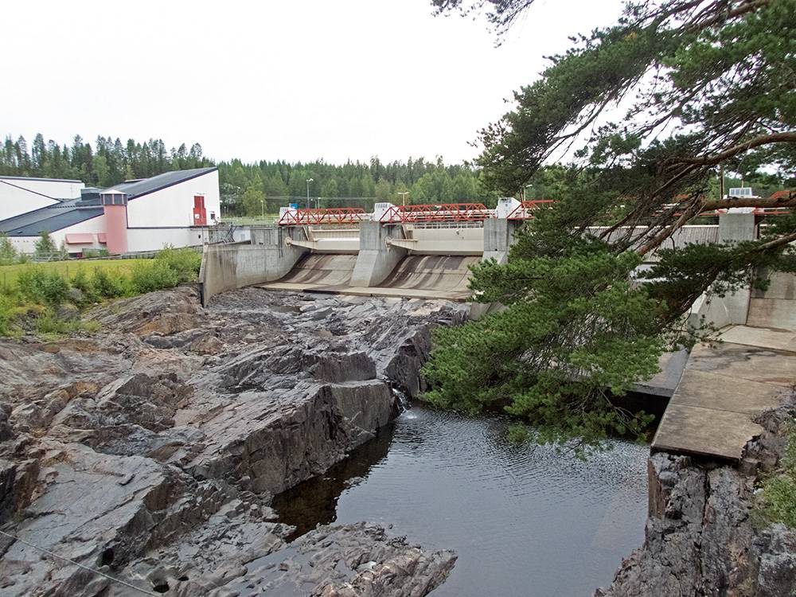
포르투갈 코임브라대 연구팀 "1MW 이하 태양광은 사전 인허가 면제인데도 일부 지자체가 수수료·추가 서류·일괄 금지로 막아"
EU 연구사업 PERSIST 팀, 2022년 법령으로 풀린 소규모 설비에 지방 수수료·'지자체 이익 선언서' 요구·근거 없는 기본계획 금지 여전하다고 진단…지자체에 계획 정비·법적 한계 준수·절차 예측 가능성 등 3가지 권고
영국 워킹엄·웨스트버크셔 의회, 의회 소유 농지에 태양광 단지 직접 짓는다…패널 4만3,000장·3만5,000장
워킹엄 2,400만 파운드 들여 40년간 해마다 100만 파운드 넘는 이익 기대, 웨스트버크셔는 1,860만 파운드로 40년 1,000만 파운드…공공시설 전기 대고 남는 전기 팔아 재정 보탬, 영국서 약 20개 지자체가 이미 태양광 단지 직접 운영
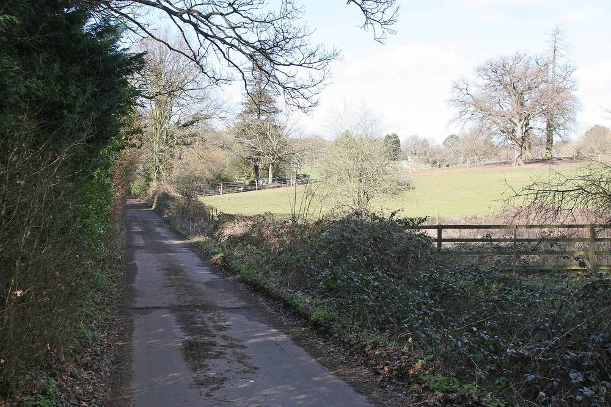
미국 앤아버 시영 전력 '제안 E' 비공식 집계서 부결…반대 51.83%, DTE가 계속 전기 공급
시민단체가 2020년부터 이어 온 '민영 전력망을 시영으로' 운동 3.66%포인트 차로 막혀…DTE서 180만 달러 받은 반대 단체·시의회 다수는 반대, 새 시장·주 상원의원·연방 하원의원은 지지
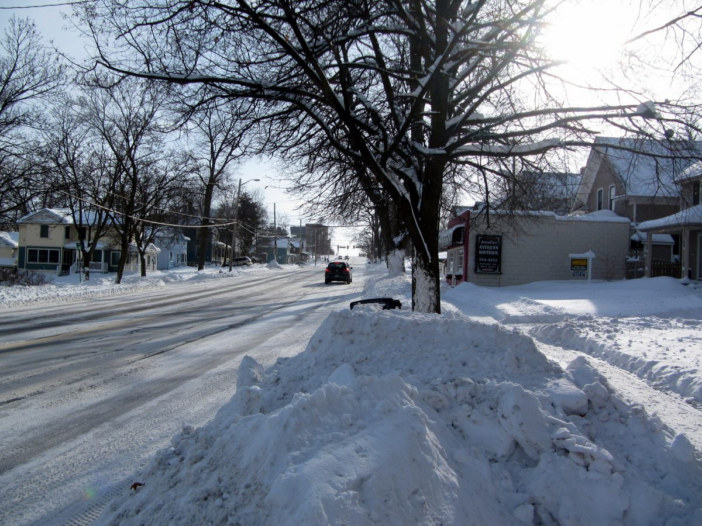
"택지·산단 공사에 맡기면 재생에너지는 뒷전"…전남광주시의회 행감서 '도시개발에너지공사' 통합 재검토·에너지공사 별도 설립 요구
박형대 의원 "두 공사 매출총이익 중 에너지사업 비중 1.2%·0.15%"…김승남 광주도시공사 사장 "전문성 갖춘 에너지공사가 출범해야 한다는 생각 변함없다"
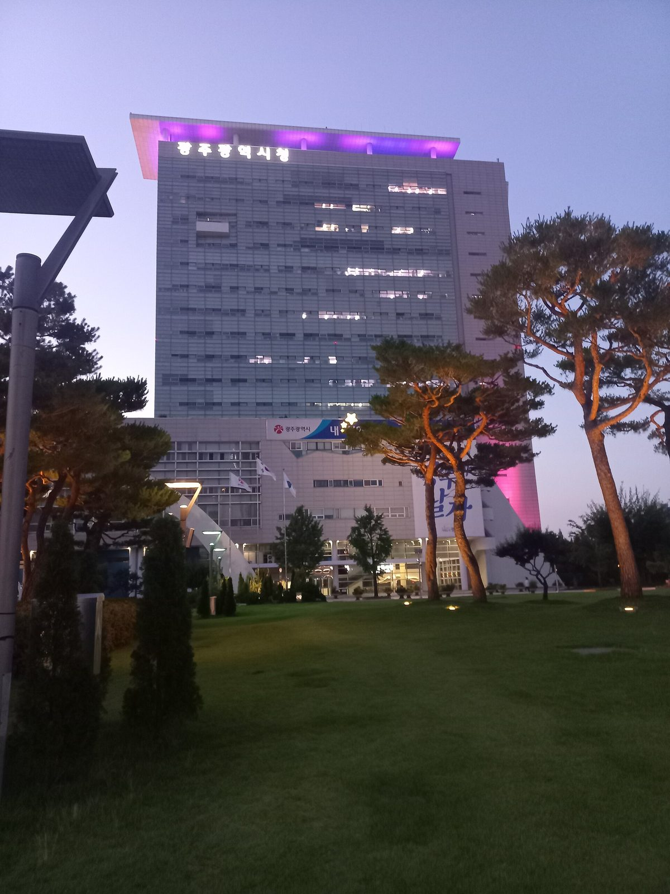
일본 영농형 태양광 2027년 새 기준에 업계 반발…차광률 30% 미만·판매 실적 50만 엔 기준이 소농·신규 농가 막을 우려
솔라셰어링 추진연맹 곤도(近藤恵) 공동대표 "농림수산성 우수 사례 7곳 중 5곳이 차광률 30% 이상"…시정촌 기본계획·인정 절차까지 더해져 대기업에 유리, 진입 문턱 낮추고 정기 점검으로 걸러 내자 제안
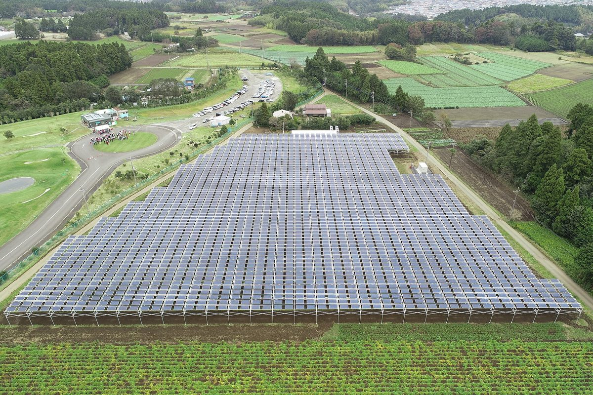
뉴질랜드 애슈버턴 지역의회, 오르는 전기요금에 태양광 검토…연 40만 달러 절감에 500만 달러 넘는 선투자 놓고 의원 이견
연 전기료 약 177만 달러, 다음 주 장기계획 예산 심의서 부서별 태양광 안 검토…"그 돈 도로에 쓰는 게 낫나" 대 "건물 지붕에 조금씩"

평창군, 봉평 유포리 150MW 태양광 업무협약 앞둬…발전사업 지분으로 군민 기본소득 재원 만든다
10월 운두령 풍력 협약 이어 5일 정상그룹과 협약 예정, 두 사업 모두 2029년 상업운전 목표…군유지 유휴부지·취소된 풍력단지 재개발 검토해 2035년까지 지분 확대, 지분율·배당액은 아직 미정
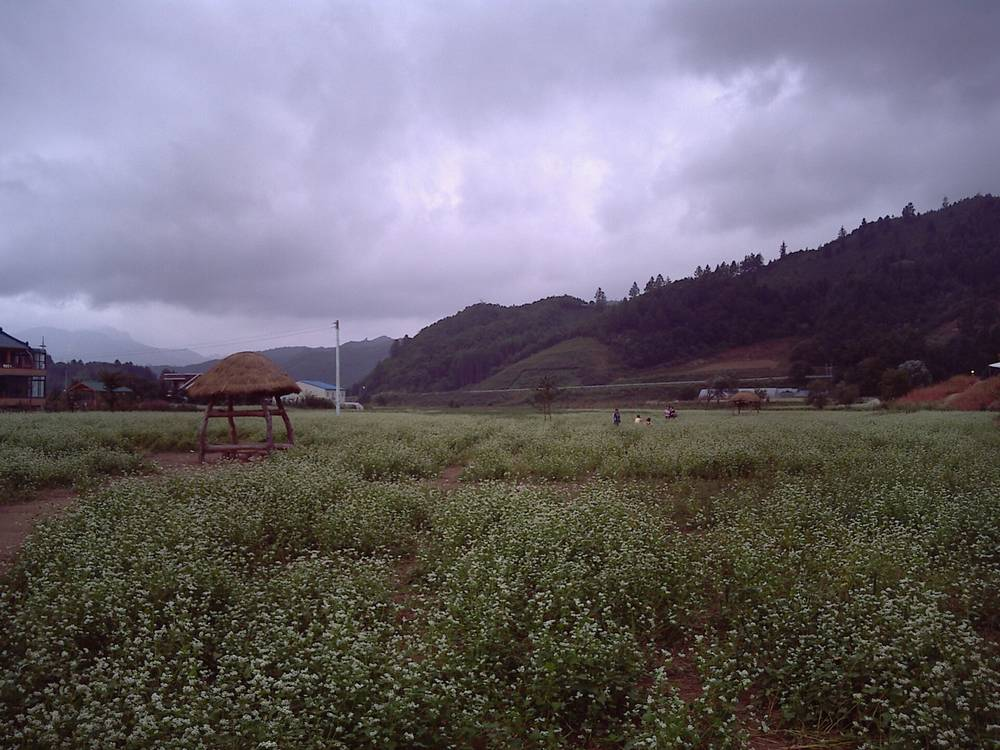
프랑스 코르시카 인구 300명 마을 코자노, 공공건물 지붕 태양광 가동…바이오매스·소수력 이어 세 번째 재생에너지
지붕 약 1,300㎡에 사업비 약 9만 유로, 5만 유로는 코르시카 에너지청 지원…전기는 팔지 않고 공공건물끼리 나눠 쓰는 집단 자가소비, 시장은 건물 전기 사용 약 40% 감소 전망
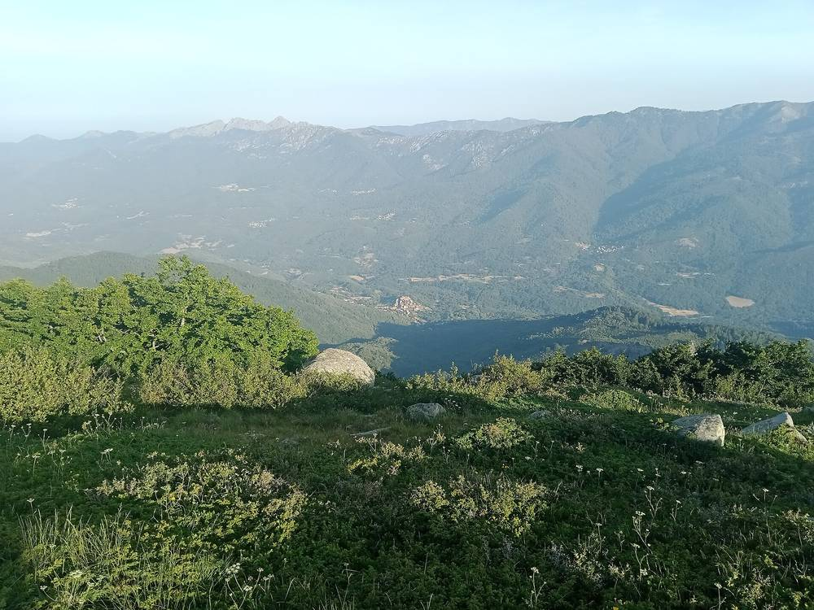
독일 슈투트가르트 시, 하수처리장 반응조 위에 2,745kWp '접히는 태양광 지붕' 짓는다…완공되면 독일 최대, 2027년 2분기 첫 발전 예정
모듈 5,280장으로 1만7,493㎡ 덮고 강철 케이블에 매달아 모터 120대로 눈·강풍·우박 때와 밤에 접어…해마다 220만kWh 넘게 만들어 처리장 전력의 약 9% 자가소비 예상
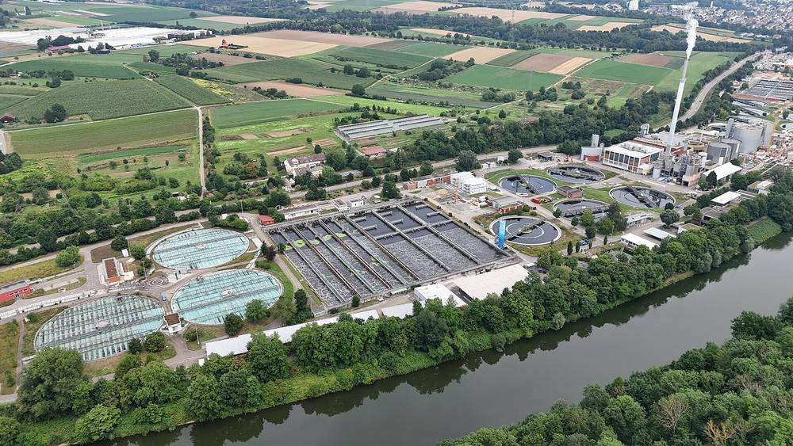
루마니아 고르지 군 트르구카르부네슈티, 시청 소유 1MW 태양광 단지 공사 마쳐…국가 전력계통 연결 앞둬
총사업비 650만9,322레이, 2024년 8월 에너지부와 지원계약…시청·산하 기관·가로등 전기 자가소비용…시장 "600만 레이 중 280만 레이 받아, 나머지 와야 연결", 내년엔 병원까지 전선 잇고 저장 배터리 사업도 신청
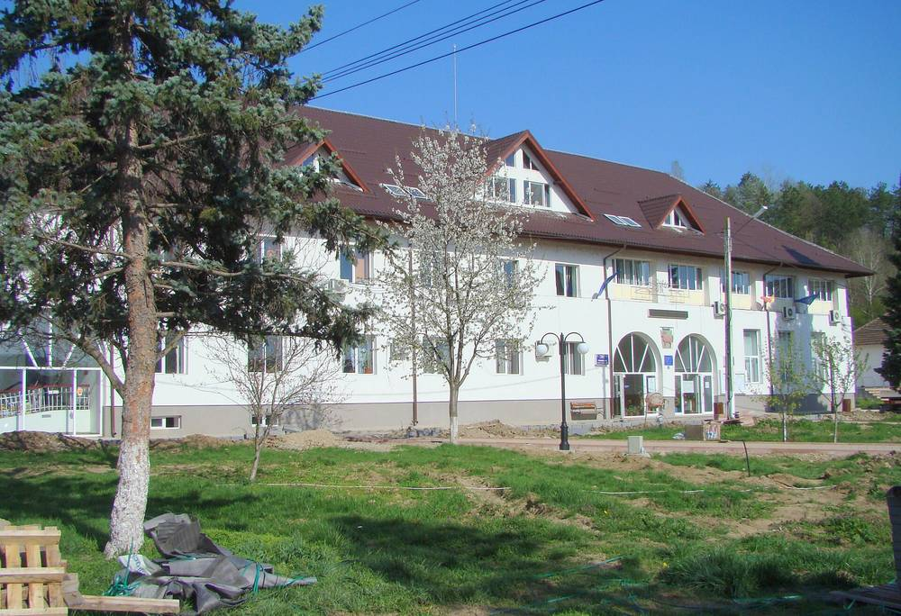
프랑스 도르도뉴 혼합경제회사 SEM 24, 광역 지자체 땅에 연 5,150MWh 태양광 준공…지역 제과 공장에 20년 고정가로 직접 판매
패널 7,668장·사업비 510만 유로 중 60만 유로는 누벨아키텐 지역 지원, 그랑 페리괴는 7ha를 30년 장기임대로 내주고 해마다 사용료…전력망 포화 때 출력 제한으로 저장 배터리 검토

그리스, '에너지 공유 권리' 담은 전력시장 법안 의회 제출…다른 건물에서 만든 태양광 전기도 가정·중소기업·지자체가 나눠 쓴다
법안 12조로 전력법에 137Γ조 신설…6MW 이하 설비는 제3자가 운영 대행, 공공 소유 설비는 공유 전기의 평균 10% 이상을 취약가구에 돌리도록 노력해야

프랑스 칼바도스 두 마을에 풍력 7기·39.9MW, 2027년 초 가동…마을 몫은 지방세와 '마을길 사용료' 연 8만~10만7,000유로
2022년 4월 허가 뒤 소송에 막혀 2024년 12월에야 확정…3기 서는 바루앙오주 연 약 8만 유로, 4기 서는 노레앙오주 연 약 10만7,000유로, 코뮌 연합 약 17만1,300유로·도 약 9만6,000유로
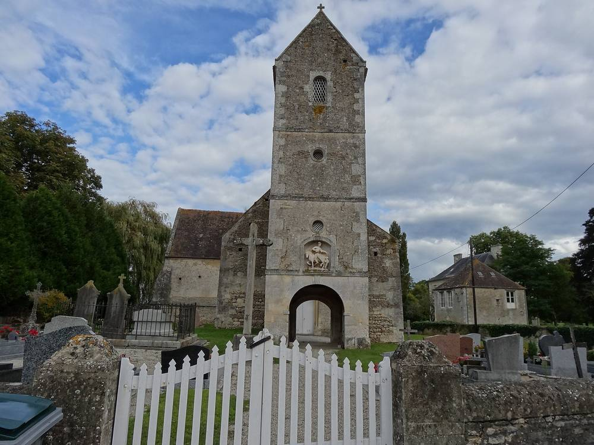
독일 치메츠하우젠 풍력 14기, 투자사는 '30년 최대 2,300만 유로' 계산서…시장은 반대, 가구당 전기 할인은 연 45유로
가동 첫 15년은 영업세 거의 없고 토지 임대료는 사유지 주인 몫…법정 분담금 연 약 28만2,000유로는 마을이 내는 군 분담금 240만 유로의 10분의 1 남짓

루마니아 아라드시, 시유지 25.5ha에 태양광 24곳·저장장치 짓는 안 시의회 표결에 올려…학교·유치원 등 13개 공공기관 전기 98.5% 충당 추정
400kW씩 모두 9.60MW·저장 2만5,056kWh, 사업비 8,547만여 레이 중 5,590만여 레이는 EU 현대화기금에 신청 예정…11월 20일 신청 마감 맞춰 타당성 조사 접수 이튿날 임시회로
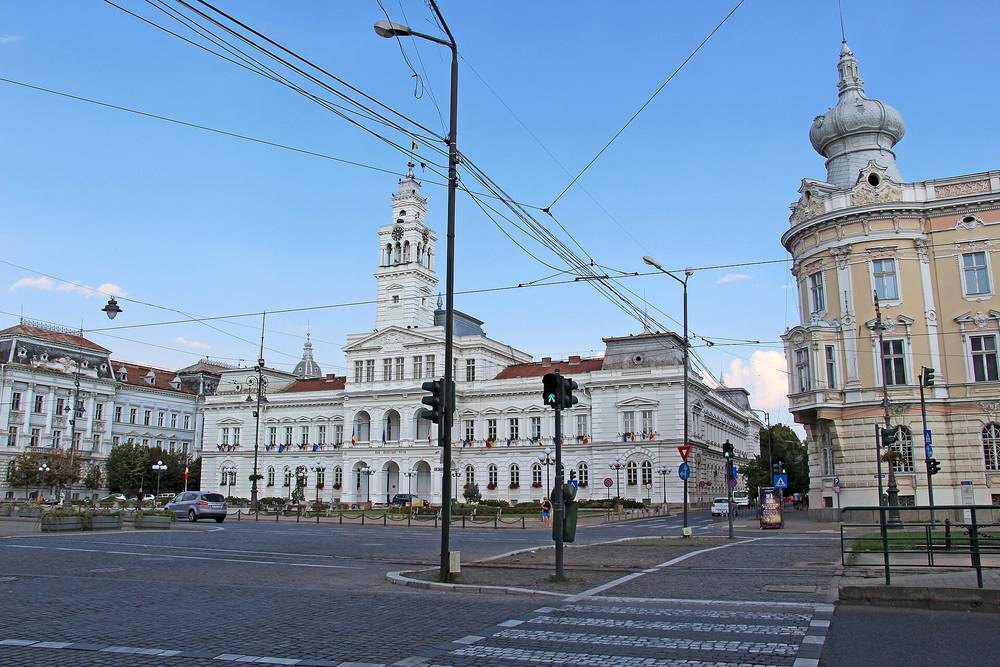
스코틀랜드 공공소유 보고서 "권한만으론 부족"…공공 토지 위 사업·풍력 리파워링에 지역 지분 조건 붙이라고 권고
영국 지역경제전략센터(CLES) 10월 26일 공개…사우스래너크셔는 학교·체육시설 태양광 3,035kWp 전기요금 절감액을 다음 설치에 재투자, 하일랜드는 버스 직영으로 연 170만 파운드 넘게 절감…스코트윈드 수입 투입도 제안
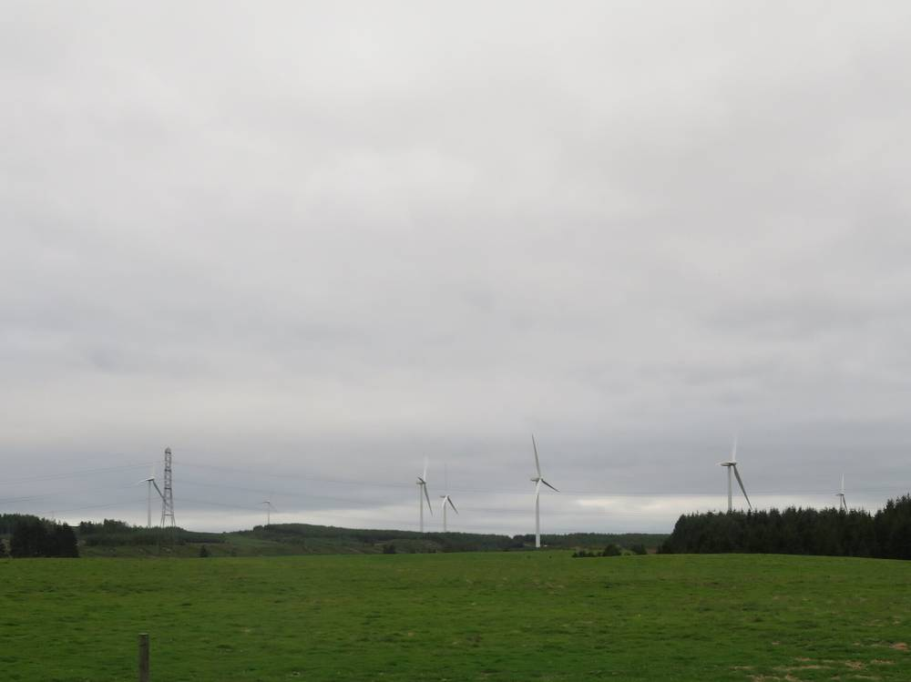
그리스 서마케도니아 도의회, 국영 전력사·아마존 데이터센터와 지역 발전 협약 협상단 꾸리기로…지역구 국회의원은 태양광 500MW 지역 몫 제안
도지사 안 찬성 17표로 통과, 협상 불가 조건부터 정하자는 야당 안은 8표…쿠쿨로풀로스 국회 부의장, 땅·물 내주는 대가로 500MW 짓게 해 도·시가 함께 지역 전력 공급 회사 만들자고 제안, 전기값 MWh당 50~60유로 주장
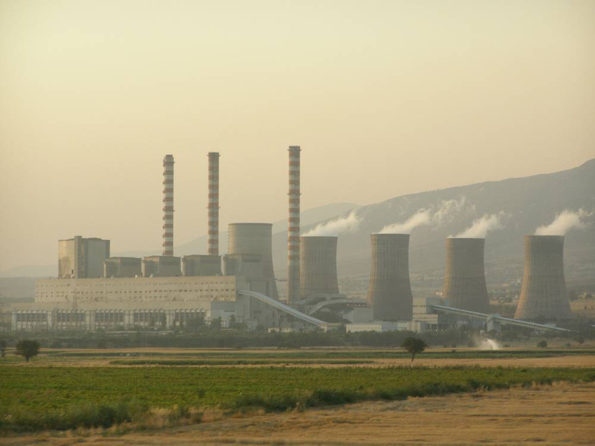
스페인 레온시, 시 건물 13곳 지붕 태양광 2,481장으로 전기 나눠 쓰는 공동 자가소비…유럽 정치혁신상 받아
10곳에 배터리 1,970kWh, 시 계획상 100곳 넘는 시 시설에 공급…사업비 250만 유로 중 100만 유로는 EU 기금, 연 390만kWh 생산 추산…전기 많이 쓰는 시설 수요 85% 충당이 목표
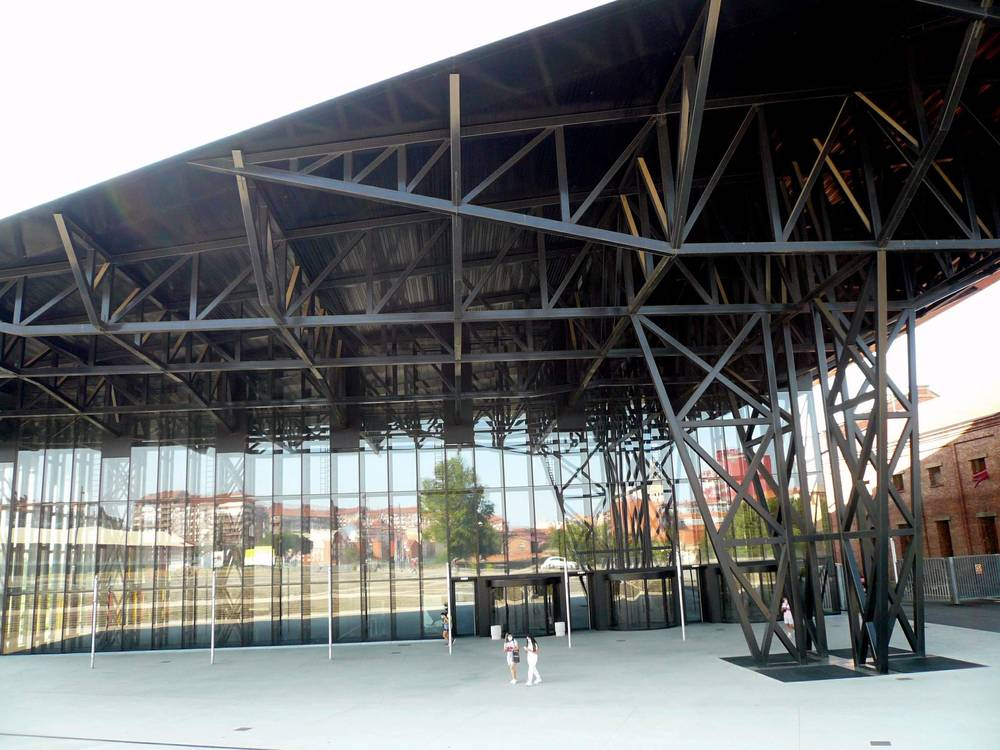
미국 클리블랜드 시영 전력, 여름 정전 뒤 요금 인상 요청…늘어난 수입으로 2028년 3,000만 달러 빌려 설비 개선
120년 된 시 소유 전력회사 CPP, 고정요금 신설·많이 쓸수록 비싼 요금 구조 제안…지역 재생에너지 직접 생산도 전략계획에, 시의회 "개선 일정 없인 승인 어려워"
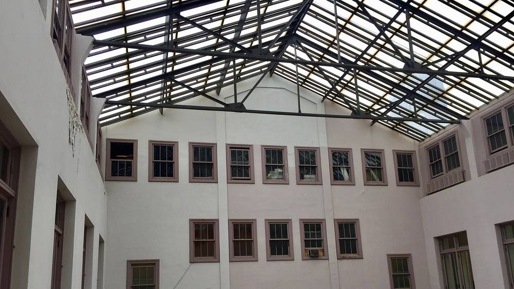
서산 관내 발전용량 68만kW 중 주민 수익 마을발전소는 218kW, 0.03%…시의원 "주민참여·개발이익공유 조례안 준비"
김애란 서산시의원, 첫 시정질문서 주민협동조합 설립 컨설팅·이익 배분 기준 마련에 집행부 협조 요청…조례안은 발의 전 단계, 재생에너지 대목 시 답변은 알려지지 않아
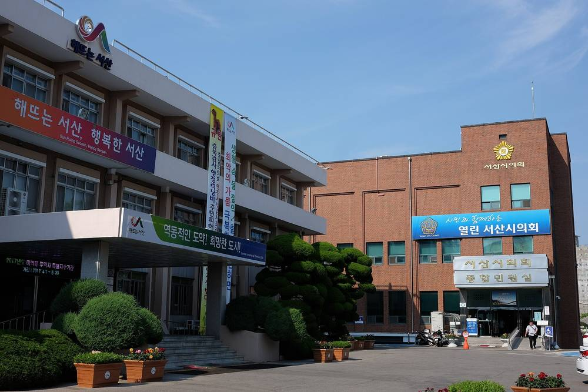
베를린 공영 지역난방 회사 BEW, 유럽투자은행서 5억 유로 대출 한도…"2030년 석탄 끝내고 하수 열 대형 히트펌프로"
첫 2억5,000만 유로 서명·최장 25년…KfW 대출 10억 유로에 이어 2030년까지 약 35억 유로 투자, 상수도공사 하수 열·청소공사 소각장 증기 활용
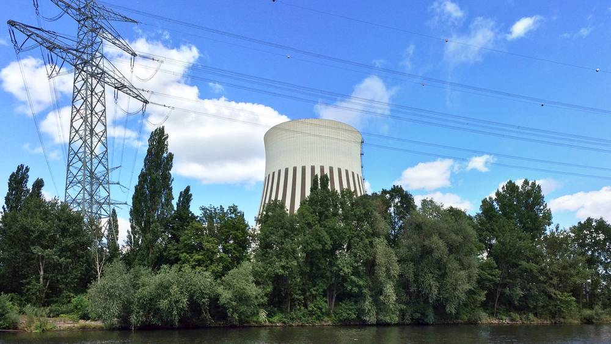
프랑스 '주차장 태양광 지붕 의무' 첫 기한 석 달 지났지만…대형 식품매장 큰 주차장 85%에 보이는 설비 없어
민간 주차장 태양광 지도 업체 파르크선, 매장 1만6,790곳 항공사진·라이다로 첫 전국 실측…설비 비율 2023년 4.5%→2026년 9%, 업체별 3% 안팎~16.3% 격차, "대상 주차장 절반 덮으면 약 6.3GWp·연 7TWh" 추산
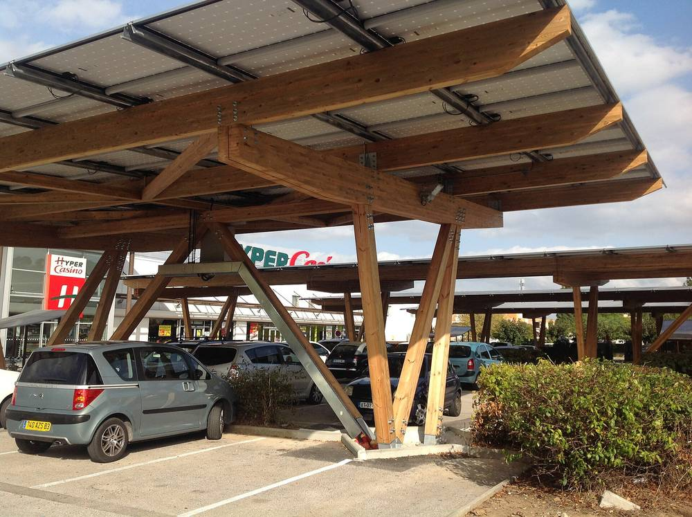
미국 보이시, 지열 난방을 저렴 공동주택 300가구 넘게로 넓힌다…마이크론, 부족 재원 250만 달러 출연
시 주택토지신탁 프로그램과 개발사 J. 피셔의 러스크 주택지구, 10%는 노숙에서 벗어나는 주민에게…블룸버그 자선재단 100만 달러로 지열 확장 시범, 세액공제·채권·시 재원 겹쳐 2027년 봄 착공 예정, '미국 도시 첫 시도'는 사업 주체 설명
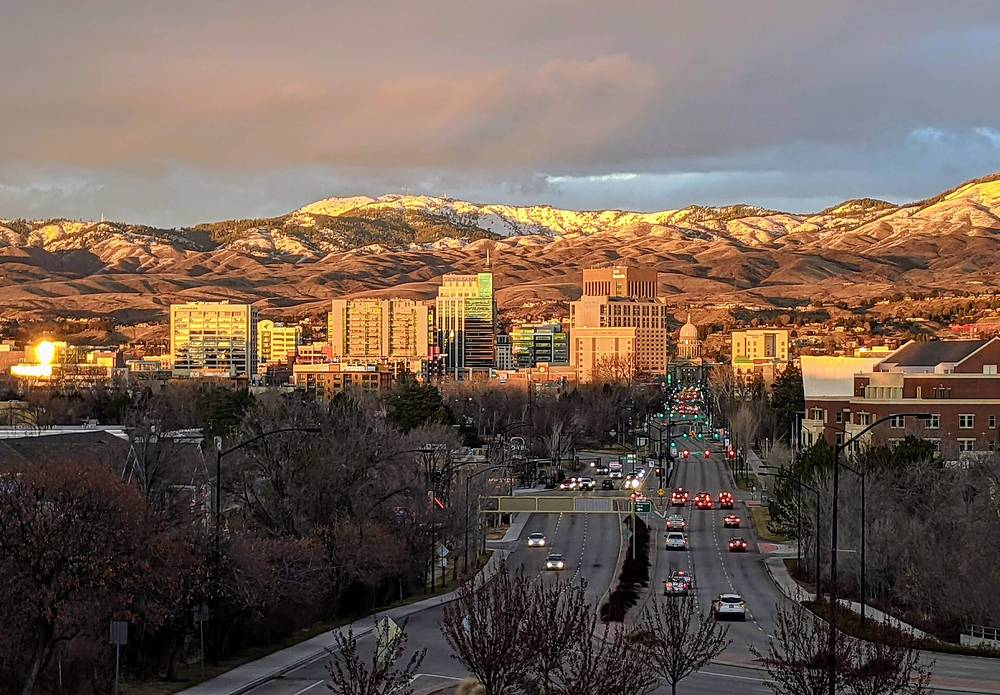
네덜란드 위트레흐트주, 공공 열 회사 'Uwarmte' 설립 추진…1,930만 유로 출자 요청, 10년간 약 1만5,000가구 연결
주 20%·배전사 자회사 40%·국영 열투자사 40% 공동 지배 구조…12월 16일 주의회 표결 앞둬, 주민 열 공동체와 "경쟁 아닌 분담" 약속

평창군, 월 15만 원 '평창형 기본소득' 재원으로 풍력·태양광 수익 꼽아…민선 9기 안 지급 목표
정부 농어촌 기본소득 공모 국·도비와 신재생에너지 사업 수익을 함께 쓰는 '투트랙' 구상, 8월 군청에 에너지전략 TF…공모 선정 여부·발전 수익 규모·재원 구조는 아직 안 나와
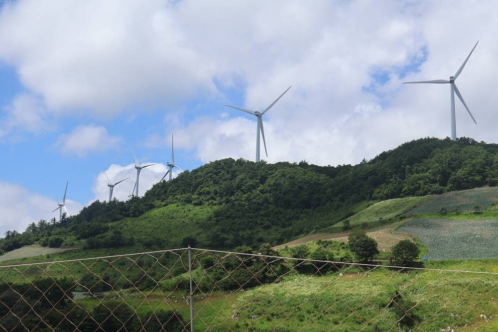
미국 네바다 모아파 파이우트 부족 땅 위 250MW 태양광 10년…50년 임대에 로열티·전기 나눔 없어, 부족장은 다음 사업에 "전력 소유 몫" 추진
원주민 보호구역 안 첫 대형 태양광, 최대 11만1,000가구분 전기는 캘리포니아로…부족은 발전 전기와 발전 수익을 받지 못하고 전기를 따로 사서 써, 이달 네 번째 태양광 착공 예정
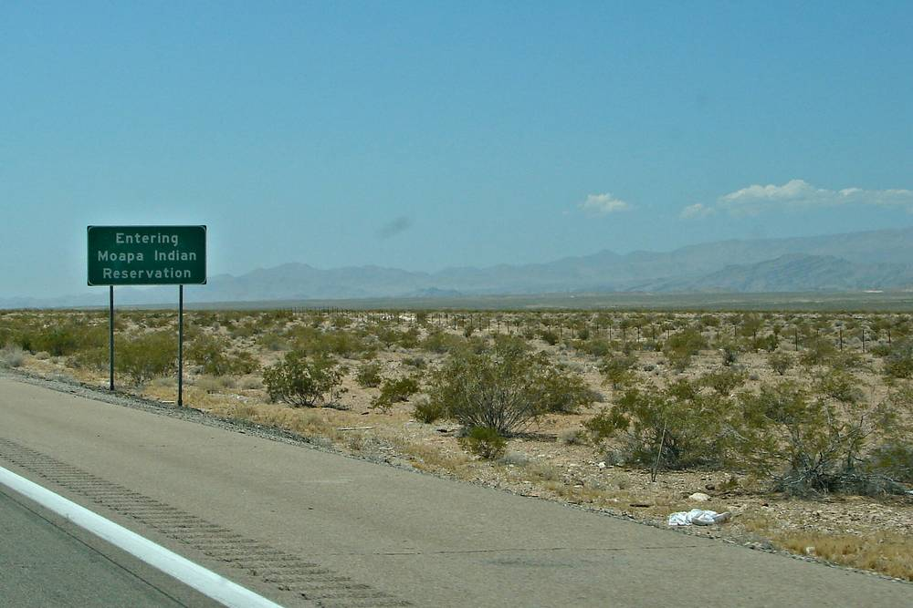
미국 뉴욕 셸터아일랜드 타운 위원회, 재활용센터 지붕 태양광 추진 권고…제안서 9건 평가해 4건 추천
국립재생에너지연구소 18개월 조사 끝 '비용 효율 사업' 결론…상위 제안 회수 12~15년·설비 수명 25~30년, 올해 필요 예산 약 15만 달러, 배터리는 빼기로
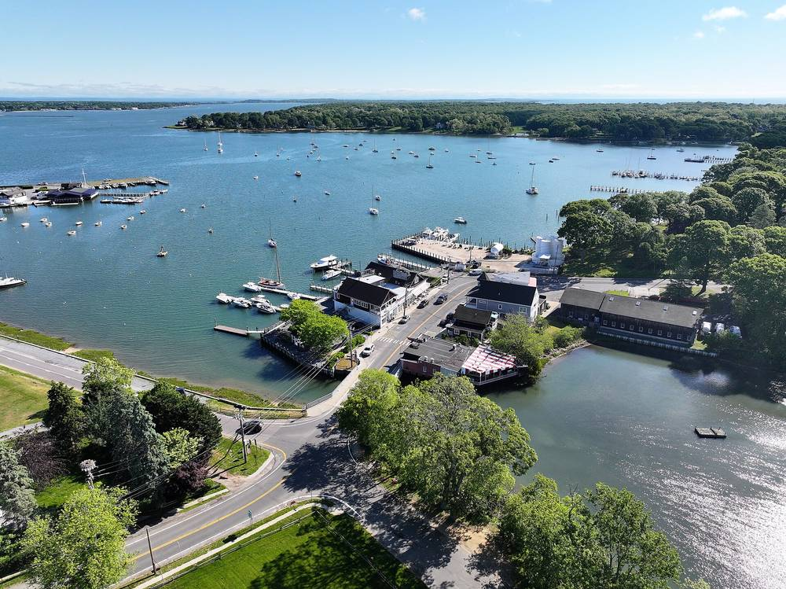
벨기에 자연보호단체 나투르퓐트, 에코파워의 메헬렌-노르트 풍차에 '다섯 조건' 이의…"조건 없으면 허가 말아야"
가을 이동철 박쥐 보호 야간 자동 정지·가동 뒤 최소 2년 독립 조사 등 요구…자연 부분만 '조건부 찬성', 소음·경관은 판단하지 않아…메헬렌시는 11월 4일 지금 안대로면 잠정 부정 의견 내겠다고 밝혀
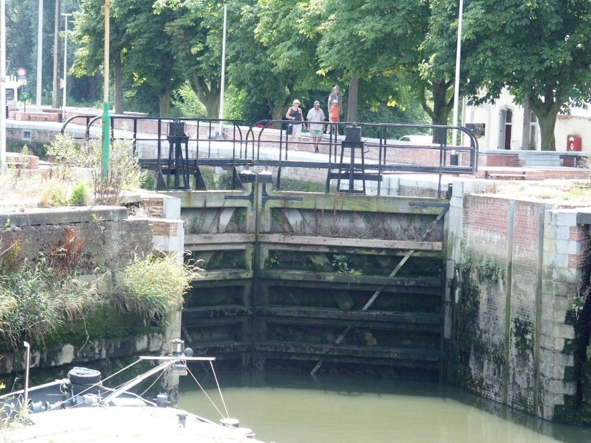
스페인 발렌시아, 시립 묘지 2곳 지붕에 태양광 2,495.96kWp 공사 마쳐…전기 4분의 1은 취약가구 800곳에 나눌 계획
시립 묘지 5곳 지붕을 쓰는 '레퀴엠 인 파워' 사업, 5곳 전체 투자 320만 유로·연 약 3,388MWh 예상…75%는 시 건물이 쓰고 대상 가정은 시 사회복지 부서가 고른다
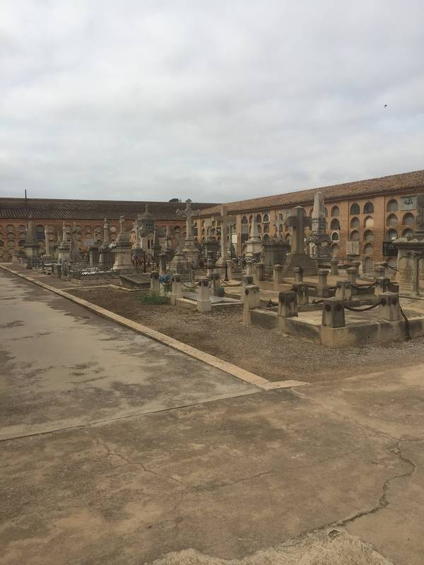
호주 울런공 시의회 '에너지 형평 틀' 만장일치 채택…주택 태양광 시 평균 35%, 가장 낮은 동네는 17.9%
세입자·저소득층·아파트 주민도 값싼 청정 전기 누리게 4대 원칙 세워…시 조사 "가구 거의 5분의 1이 에너지 곤궁 겪을 수 있어", 새 예산·사업은 정해지지 않아
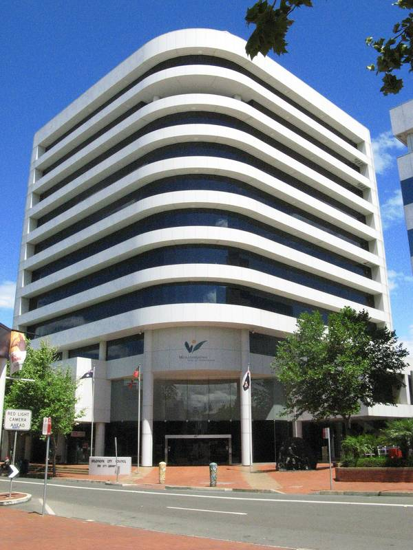
미국 로드아일랜드, 주 청사 주차장에 태양광 카포트·배터리·충전기…930만 달러 투입
프로비던스 스미스힐 청사 단지 재생에너지 1MW로…연방 지정 예산 450만 달러에 탄소배출권 수입 보태, 2027년 1분기 착공·연말까지 가동 목표
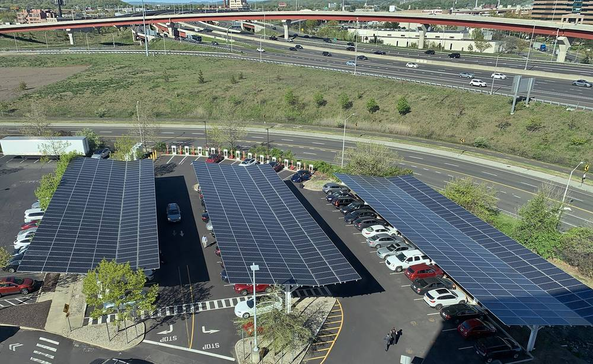
스코틀랜드 노총·환경단체, 육상풍력 105곳 5년 세후이익 28억3,000만 파운드 중 90% 가까이 주주 배당 분석 내놓고 풍력·버스 공공소유 확대 요구
지역경제전략센터(CLES) 분석…버스 공공예산 2019/20년 뒤 72% 늘었지만 이용은 줄어, 공공소유·실행단 신설과 GB에너지 역할 확대 제안…업계는 민간 투자 여전히 필수, 정부는 CARES 예산 1,500만 파운드로 늘렸다고 답해
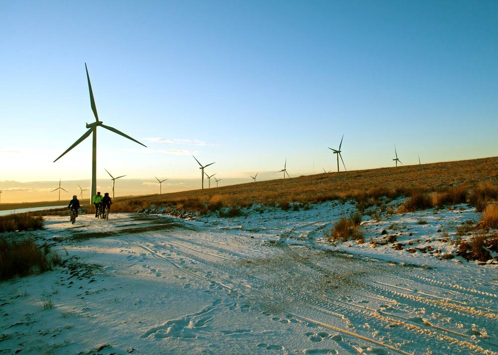
미국 미시간주, 대형 태양광·풍력 허가한 지자체에 MW당 최대 5,000달러 지원금…57곳 승인
'재생에너지 준비 지역 지원금' 착공 때 지급, 하트 타운십은 60만 달러로 도로 보수·조례 정비…주 정부 우회 허가로 넘어간 오타와 카운티 200MW 태양광은 법정 다툼
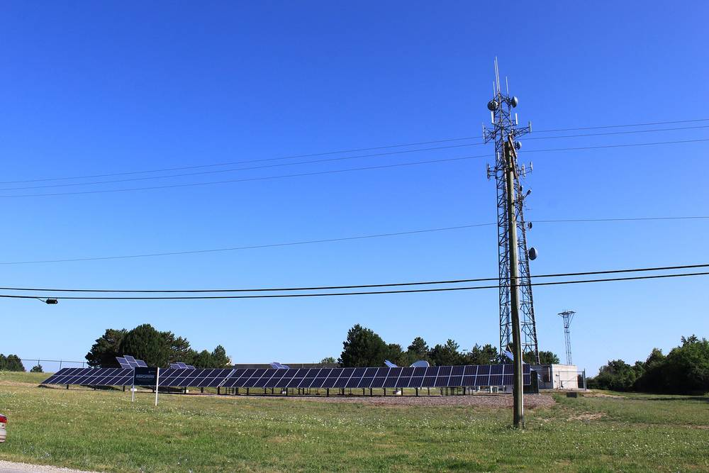
대만 화롄 펑린 1,000ha 태양광 단지 '지역 환원금' 명목 뇌물 혐의…태양광 기업 회장 등 7명 구속
검찰, 훙더에너지가 당시 진장에 3,000여만·전 농회 총간사에 1,000여만 대만달러 건넸다고 판단…피고들은 혐의 부인, 사업은 주민 반발로 이미 철회
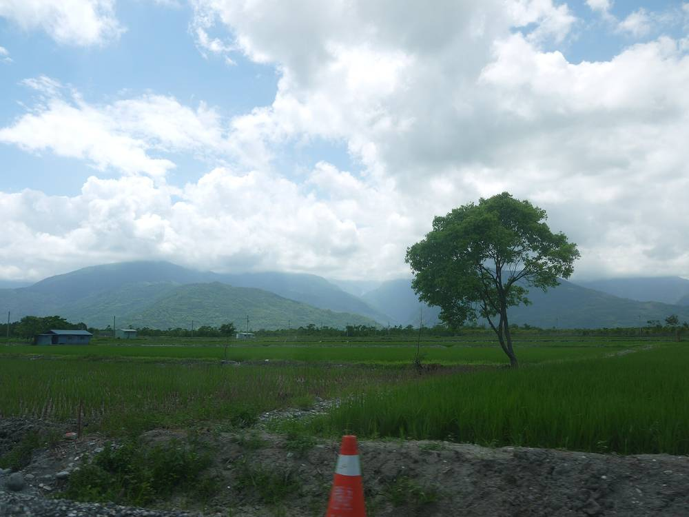
일본 원폭의 그림 마루키미술관 지붕의 반원전 태양광 13.95kW, 개수 공사 뒤 다시 달기 위한 인터넷 모금 시작
후쿠시마 원전사고 이듬해인 2012년 시민 기부로 패널 93장 설치…물가 상승으로 개수 공사비 모자라 재설치 미루고 올해 2월 떼어 내, 미술관은 내년 5월 재개관 목표
地域
「営農型太陽光を建てても電気を送れない」…全南光州市議会、2028年末完成予定の西霊光変電所の前倒しを要求
朴元鍾委員長、霊光・月坪村など系統接続の遅れを指摘…市「韓電と協議中、陽光所得村はESS・仮想発電所連携のコンサルティング」
大田・ハンバッ総合運動場の公営駐車場太陽光、国費公募に選ばれながら地方費不足で断念…市議会「事業費・容量が資料ごとに違う」
朴恩姫市議、施設管理公団の行政事務監査で「総事業費6億ウォン基準の書類の金額がばらばら」…透明な業者選定手続きを要求
蔚州郡・九英公園公営駐車場の太陽光、17日着工へ…20m先のマンション住民「反射光が心配、撤回を」
郡「反射率5.3%のパネル・傾斜9度、手続きはすべて順守」…住民「郡が立法予告した住宅離隔200mの10分の1」
再エネ自立率1.2%の麗水、太陽光の住宅離隔距離を300m→200mに…道路離隔100m規制は廃止、17日本会議へ
上位法令の9月18日施行から2か月で都市計画条例改正案が常任委で原案可決…「100mまで下げよ」との要求に市は「苦情が多く段階的に」
金海市、公営駐車場・学校・産業団地に太陽光を広げ収益は市民へ…市議会討論会「設置可能な敷地の調査から」
1,000㎡超の公営駐車場への太陽光設置義務化を前に16日に市民討論会…金海は慶尚南道18市郡で電力使用量・駐車場太陽光ポテンシャルともに2位
全北農業技術院、農業振興区域に営農型太陽光を設置する際に農地法の手続きを欠落…道の監査で12件の行政上の処分
2023年に実証設備を建てる際、農地の一時使用協議と開発行為許可を受けず…研究室の安全管理不備・外部講義の未申告で219万5,000ウォンを回収
安城市の「公有地活用・住民参加型太陽光」、地方自治政策大会で受賞…体育施設・公営駐車場に市民協同組合の発電所
13日に国会舍廊斎で市長・郡守・区庁長協議会長賞…近隣の村の参加と収益の村の福祉への活用を審査基準に、今後は仮想発電所で域内企業に安い電気を供給する構想
仁川・永宗区、来年住宅・商店など227カ所に太陽光・地熱の設置費を最大80%支援…「再生エネルギー融複合支援事業」で国・市費26億2,000万ウォン確保
総事業費41億9,000万ウォンのうち補助金35億3,000万ウォン、太陽光192カ所・太陽熱7カ所・地熱28カ所…来年2月から本格推進
牙山市、太陽光の住宅地離隔距離を500m→200mに短縮し道路離隔は撤廃…住民同意の事業はさらに緩和
都市計画条例を改正、進入道路の舗装・畜舎など建築物上の太陽光基準も緩和…「日差し所得村」8カ所で推進中、サムスン投資に伴う電力需要に備え
光州・光山区、温室効果ガスを減らしたマンション6カ所に3,600万ウォン…LED交換・太陽光設置を支援
炭素中立ポイント制の加入率・住民の実践を評価して選定、500世帯以上部門の大賞・新昌都市公社国民賃貸アパートに1,100万ウォン
忠清圏を通る国家基幹送電網27事業…「電力は首都圏へ、累積負担は地域に」住民の声強まる
全国99事業のうち大田・世宗・忠清南道関連が27、セマングム2～新瑞山約121kmなど2030～2036年竣工目標…政府「鉄塔最大2,214基削減」案でも村ごとの負担・地中化区間の基準はまだ
保寧市「西海岸エネルギー高速道路の新規送電線に原則反対」…青羅・嵋山・聖住面は345kV3路線すべてが通過
鉄塔270基・130基・230基の計画…脱石炭地域の送電余力活用・地産地消・経過地への系統連系優先権を要求
甕津郡守「島の再エネ、系統接続が最大の課題」…霊興・内7里の「日差し所得村」を再推進
白翎島で7月に2,600世帯が最大8時間停電…洋上風力の背後港湾・送配電網の準備遅れ「国・仁川市・郡で共に解決を」
羅州湖の水上太陽光、事業者「20年間で373億ウォンを地域還元」…反対側は「周遊路の景観を守るべき」
97.8MWのうち19.56MWを共生寄与分に、茶道面の住民1,700人が対象…瑞山大湖湖は累計発電収益53億8,700万ウォン
米カリフォルニア州ヒューニーミ港、913kWの駐車場太陽光が稼働…港は初期費用なしで年140万kWh
自動車待機エリアの上に屋根型発電所…250世帯分の電力、2030年の港湾運営ゼロ排出目標に寄与
蔚山の750MW浮体式洋上風力「文武バラム」の親会社、25日に清算可否の株主総会…資金確保がカギ
スウェーデンのヘキシコン、取締役会は存続を提案も「運転資金調達に重大な不確実性」と明記…監査人は意見を表明せず
英コベントリー市、E.ONとグリーンベルトに25MW太陽光を推進…市議「E.ONがいくら稼ぐか公開を」
7,000世帯分の電力・事業費はE.ON負担、市は所有地の賃料と電力購入を検討…2カ所目の用地も物色
朴燦大仁川市長、オーステッド経営陣と面会も…漁業者「協議体を断ち市長とだけ会談」と反発
1.47GWの仁川洋上風力、許可から3年停滞・入札も保留…環境団体「まず専任組織を」、市「具体的協議のない表敬の場」
全北道、飽和した送電網の解消へESS・仮想発電所企業と連携…「太陽光所得村も接続が鍵」
LSエレクトリック・韓電全北本部などと事業モデル懇談会、送変電設備・ESS拡充を国家計画に反映するよう建議
J1水戸ホーリーホック、耕作放棄地で営農型太陽光…道の駅の電力3割を供給し2年目で黒字
茨城県城里町の約2,000㎡に67.2kW、20年固定価格のPPA…Jリーグは1クラブ上限1,000万円の再エネ助成
ソウルエネルギー公社、黒字転換も顧客満足度は79.4点…市議会「LNG依存から脱し駐車場太陽光を拡大せよ」
魏聖燦ソウル市議が行政監査で指摘…公営駐車場40カ所の立地調査を確実に、大型民間駐車場とも協議を
全南光州都市開発エネルギー公社の本社はどこに…全南開発公社労組「務安に」、光州都市公社労組「条例もまだなのに時期尚早」
22の傘下機関を11に統合推進…7機関の条例案を来月16日までの定例会で審査
慶尚南道の学校366校に太陽光497基、小さいもので3kW・大きいもので563kW…道議会「188倍の格差、低容量・老朽設備の改善を」
平均68kW…慶尚南道議会教育委員会、行政事務監査の最終日に教育庁へ改善策を要求
南原市議会・盧賢以議員、公営駐車場の太陽光収益を市民に還元する条例の発議へ…討論会で協同組合モデルを議論
10日の「公営駐車場の太陽エネルギー住民所得化方策討論会」に市民・専門家約30人…全州市エネルギーセンター・環境運動連合・共同体支援センターが発表
フィリピン・ケソン市、2年足らずで太陽光容量を73%増やし58.55MWに…市庁舎・公立学校・市立病院の屋根から設置も、家庭への普及は1%未満
シンクタンクICSCが衛星画像と機械学習で分析、95%超が屋根置き…屋根の潜在量は4,916MW、「家庭・零細事業者の初期費用を軽くする金融と許認可が必要」
ソウルエネルギー公社、昨年の太陽光事業の執行率77%…チェ・ドゥホ市議「老朽設備の交換・都心太陽光拡大の年次別実行計画を出せ」
公社「運営期間を終えた発電用地を引き継ぎ高効率化し、公営駐車場の太陽光を段階的に拡大」…EV充電器の委託業者の賃金未払いで管理が1日止まった件も追及
江原道が108億ウォンを現物出資した大関嶺風力団地、年間純利益3億ウォンにとどまる…道議会の監査で「経済性と住民被害を改めて検証せよ」
江原開発公社が運営する団地の予想売上は21億ウォン…維持補修費や人件費が上がれば収益はさらに減る恐れ、騒音・低周波・シャドーフリッカーなど社会的費用も指摘
ソウルの学校3校の屋根で市民太陽光協同組合が運営する発電所、使用料1,470万ウォン滞納…学校ごとに対応ばらばら
ソウル市議会の行政監査で指摘…仁憲高は使用許可を取り消し、上院小は督促文書を11回送っただけ、協同組合型20校・民間型12校の安全点検を要求
海南・血島干拓地の国内最大400MW太陽光、着工式から3カ月たっても工事の跡なし…住民160人余り「埋立免許は無効」と行政訴訟
住民の持ち分は発電事業費の4%まで…海南の干拓地の大型太陽光は11件1,785MW、郡は「年末までに利益還元の細部指針」
麗水市、有人島40カ所のエネルギー転換「2030 RE40」を推進…2027年から島にも公有地太陽光・太陽光所得村
系統連系の島25カ所・非連系の島15カ所に合わせた実行案…ディーゼル発電を減らし島民の電気料金負担を軽く
九州の営農型太陽光、5年で4.4倍…全国の設置農地の24%は収穫2割超減で国が許可条件を強化
福岡・八女の茶畑は棚がけにパネルを組み合わせ月7万〜8万円…農水省「遮光率30%未満・年販売50万円以上」の新条件に業界は「一律規制は厳しすぎる」
始興型RE100、産業団地の小規模事業者1,068社が電子投票で屋根置き太陽光を決定…20年で太陽光所得180億ウォン見込み
スティールランド1万2,613kW・賛成86%、市民協同組合の駐車場発電所394kWが稼働…太陽光の許可容量は2023年末の44MW→129MW
コロラド初のプラグイン太陽光非営利団体が発足…賃借人・管理組合規約を保護する州法の施行を前に
ソーラー・アクセス・コロラドが9日に発足…HB26-1007、設置を合理的理由なく妨げられないと規定
BHESCo、イーストボーン全域へ「ソーラー・パワード・コミュニティーズ」を拡大…電気料金を最大25%安くすることを目標に
持ち家世帯・賃借人・地域の事業所が対象…オフジェムのエネルギー補償基金で運営
シェトランドの地域エネルギー関係者「スコットランドの地域エネルギー支援金を複数年で支給してほしい」
秋に配分されるCARES資金は翌年3月中旬までに使う必要…大きな事業を小分けにし、工事が冬に集中
ドイツ「エネルギー・シェアリング同盟」、隣近所で太陽光の電気を分け合う障害を除く11の提案…「配電会社に処理期限と罰則を」
6月から法律で認められたが、精算手続き・スマートメーター普及の遅れ・高いコストで停滞…協同組合や市民エネルギー団体には「複雑すぎるか採算が合わない」
「裸足の大学」創設者バンカー・ロイ氏死去…学校に通えなかった農村の女性たちを太陽光技術者に育てた81年
1972年にインド・ラジャスタン州ティロニアに設立した学校で学んだ女性たちが故郷の村に戻り、太陽光照明を設置・運営・保守…多くの国の女性も学びに訪れる
アイルランド・コークの隣人たちが「ソーラー・メハル」で屋根の太陽光を共同設置…先行した団地は1世帯あたり年約1,000ユーロ節約
隣人が集まって大仕事を助け合う伝統「メハル（meitheal）」を太陽光の共同購入に応用…ボランティアグループ「ノースサイド・ソーラー」、団地ごとに使い回せる方式をつくり北部地域に広げる計画
忠北開発公社、陰城郡の公営駐車場に初の公共主導型太陽光…発電純利益の50％を20年間郡に還元
韓電KDNと共同で設立する特別目的法人「忠北ソーラーリンク」がカーポート型設備を運営、郡は用地と行政を支援…「忠北型標準モデル」として道内の他市郡に拡大へ
豪研究者「再エネの地域便益は一時的な支援でなく長く残る遺産に」…地域基金は2030年に2億1,300万豪ドルの見通し
シドニー工科大学の分析「地元雇用の効果はまだはっきりしない」…先住民への持ち分・収益5％共有の入札枠、地元研修、営農型太陽光の計画上の位置づけを提案
山形・酒田で「地域に根ざす営農型太陽光」シンポジウム…「毎日電気を出してくれる牛と同じ」
米沢の農家が35アールの水田に雪国向け手動式パネル670枚…原発事故で離農した福島の農家は営農型で農業に復帰、「人のいない中山間地に人を呼ぶ価値」
佐賀市、市が52％出資する地域新電力を設立…清掃工場の電気を公共施設113カ所へ直接販売
資本金5,000万円のうち市が2,600万円・民間6社が400万円ずつ…年約1万6,000MWhを販売、市外に流れていた電気料金を地域に残す
韓国・大田市、17日に再生可能エネルギー政策フォーラム…「太陽光の価値を地域と分かち合う」市民参加型モデルを探る
世界太陽光会議の特別セッションとしてエネルギー自立村・産業団地屋根置き太陽光の事例を発表…エネルギー技術研究院・韓電KDNと分散型エネルギー協定、特化地域指定の足がかりに
ブルガリア・ソフィア市所有の地域暖房会社が危機…市長は「コンセッションが唯一の解決策」、社会党は「35年も手放せない」
熱交換所286カ所が故障で停止し東部ソフィアで暖房・給湯止まる…市議会、19日に経営陣を聴取し再建策を採決
東西発電・高陽市、一山湖水公園の公営駐車場に太陽光で協約…分散エネルギー特化地域の計画も
駐車機能を保つ景観特化型モデルを開発して市内に拡大、一山熱併給発電所の現代化事業では地元業者を優先…容量・事業費・市民参加の有無は示されず
韓電KDN・洪城郡・忠南開発公社、公共遊休地で「公共主導型太陽光」協約…発電収益はエネルギー弱者支援に
洪城郡が用地発掘と行政支援、公社と韓電KDNが企画・建設・運営…8月の忠南開発公社との協約に洪城郡が合流、用地・容量・事業費はまだ示されず
奉化郡明湖面のコゲ1里、農村RE100実証村に…3年間で10億ウォン投じ住民協同組合と村の発電所
農林畜産食品部の公募に選ばれ国費・地方費5億ウォンずつ…住宅・農産物加工施設の太陽光とエネルギー診断も、発電収益はエネルギー弱者支援と村の公益事業に
豪キャンベラ最大の蓄電池250MWが商業運転…開発会社、15年間収益の50%を準州政府と分け合い、地域団体9か所に50万豪ドル
準州政府が建設を後押しし運営収益の半分を受け取って脱炭素の財源に…需要ピーク時にキャンベラの3分の1へ2時間電力、2045年カーボンニュートラル狙う
ギリシャ・フィリ市、市の太陽光の電気で低所得1,000世帯に無料電力…大学生のいる家庭1,000世帯超に拡大、在学期間4～6年
2022年以降に入学し在学中の学生の家族の住まいが対象、医学部6年・工科大学5年・一般大学4年…12月21日に初の無料電力バウチャー、詳しい条件は近く発表
イタリア・ウンブリア州、再エネ発電所を受け入れる自治体への「環境補償金」の算定基準を決定…国の法律が定める期待発電収益の1～4%の算定方法を整備
運転時間・年間発電可能量（MWh）・電力市場（GME）の指標で発電所の耐用期間全体の収益を推計…補償金は自治体所有設備・効率化・自治体が参加する再生可能エネルギー共同体に優先的に充てる
英政府、「エネルギー独立法案」を下院に提出…新規再エネ事業に地域への最大20%の持ち分提供を義務づける道開く
5MW超の新規陸上風力・地上設置型太陽光は地域社会利益協定の締結が必要に、政府暫定案は風力1MW当たり年5,000ポンド・太陽光700ポンド…持ち分提供の対象は1MW以上に引き下げ可能、比率・金額は二次立法で確定
米マサチューセッツのクランベリー湿地の営農型太陽光2カ所、パネルの下で2度目の収穫…土地と設備は開発会社の所有、営農型には1kWh当たり9セント上乗せ
キングストン4.4MW（蓄電池13.5MWh）・プリマス1MW、農業をやめようとしていた農家の土地を開発会社が買い取りコミュニティー太陽光で電力販売…湿地に合わせて基礎を深く打ち、パネルは10フィートの高さに
オランダ・レーワルデン市、新住宅地区ミデルセーに「100%公有」の熱供給網を自ら建設する案…新築1,600戸超に供給
混雑する電力網の負担を減らし住宅供給の日程を守る構想…料金は国の上限より固定20%・変動5%安く、市議会が11月25日に決定
川の水でつくった電気の収益が市の財政に…スウェーデン・シェレフテオ、市所有のエネルギー公企業を軸に水力2.7TWhで産業誘致
地域消費量の1.5倍の電力で電池・環境配慮型航空燃料の産業を呼び込む…ノースボルト破綻後はライテンが工場を買収、市は毎年高齢者介護・青少年教育などに約1兆ウォン
ポルトガル・コインブラ大研究チーム「1MW以下の太陽光は事前許認可が免除されているのに、一部自治体が手数料・追加書類・一律禁止で阻む」
EU研究事業PERSISTのチーム、2022年の法令で緩和された小規模設備に地方手数料・「自治体利益宣言書」の要求・根拠のない基本計画上の禁止が残っていると診断…自治体に計画の見直し・法的限界の順守・手続きの予見可能性など3つを勧告
英ウォキンガム・ウェストバークシャー議会、議会所有の農地に太陽光発電所を自ら建設…パネル4万3,000枚・3万5,000枚
ウォキンガムは2,400万ポンドを投じ40年間毎年100万ポンド超の利益を見込み、ウェストバークシャーは1,860万ポンドで40年1,000万ポンド…公共施設に電力を供給し余剰は売電して財政を補う、英国では約20の自治体がすでに太陽光発電所を直営
米アナーバーの市営電力「提案E」、非公式集計で否決…反対51.83%、DTEが引き続き電力供給
市民団体が2020年から続けてきた「民営送電網を市営に」運動は3.66ポイント差で阻まれる…DTEから180万ドルを受けた反対団体と市議会多数は反対、新市長・州上院議員・連邦下院議員は支持
「宅地・産業団地の公社に任せれば再エネは後回し」…全南光州市議会の行政監査で「都市開発エネルギー公社」統合の再検討とエネルギー公社の別途設立を要求
パク・ヒョンデ議員「両公社の売上総利益に占めるエネルギー事業の比率は1.2%・0.15%」…キム・スンナム光州都市公社社長「専門性を備えたエネルギー公社が発足すべきだとの考えに変わりはない」
日本の営農型太陽光、2027年の新基準に業界が反発…遮光率30%未満・販売実績50万円の基準が小規模農家・新規就農者を阻む懸念
ソーラーシェアリング推進連盟の近藤恵共同代表理事「農水省の好事例7例のうち5例が遮光率30%以上」…市町村の基本計画・認定手続きも加わり大手に有利、参入の敷居を下げ定期点検で見極めるよう提案
ニュージーランド・アシュバートン地区議会、上がる電気料金で太陽光を検討…年40万ドル節約に500万ドル超の先行投資で議員の意見割れる
年間電気代は約177万ドル、来週からの長期計画予算審議で部署ごとの太陽光案を検討…「その金は道路に回すべきか」対「建物の屋根に少しずつ」
平昌郡、蓬坪・ユポ里の150MW太陽光で業務協約へ…発電事業の持ち分で郡民のベーシックインカム財源づくり
10月の雲頭嶺風力に続き5日にチョンサン・グループと協約予定、両事業とも2029年の商業運転目標…郡有地の遊休地や取り消された風力団地の再開発を検討し2035年まで持ち分拡大、持ち分比率・配当額は未定
仏コルシカ島の人口300人の村コッツァーノ、公共施設の屋根で太陽光発電を開始…バイオマス・小水力に続く3つ目の再生可能エネルギー
屋根約1,300㎡、事業費約9万ユーロのうち5万ユーロはコルシカのエネルギー庁が支援…電気は売らずに公共施設同士で分け合う集団自家消費、村長は施設の電力使用が約40%減ると見込む
独シュトゥットガルト市、下水処理場の反応槽の上に2,745kWpの「折りたためる太陽光屋根」を建設…完成すればドイツ最大、2027年第2四半期に初発電の予定
モジュール5,280枚で1万7,493㎡を覆い、鋼索につり下げてモーター120台で雪・強風・ひょうの時と夜間に折りたたむ…年220万kWh超を発電し処理場電力の約9%を自家消費の見込み
ルーマニア・ゴルジュ県トゥルグ・カルブネシュティ、市役所所有の1MW太陽光発電所が工事終了…国の電力系統への接続待ち
総事業費650万9,322レイ、2024年8月にエネルギー省と補助契約…市役所・傘下機関・街灯の電力を自家消費…市長「600万レイのうち280万レイを受け取り、残りが来れば接続できる」、来年は病院まで送電線を引き蓄電池事業も申請
フランス・ドルドーニュの混合経済会社SEM 24、広域自治体の土地に年5,150MWhの太陽光発電所が完成…地元の製菓工場に20年固定価格で直接販売
パネル7,668枚・事業費510万ユーロのうち60万ユーロはヌーヴェル＝アキテーヌ地域圏が支援、グラン・ペリグーは7haを30年の長期賃貸で提供し毎年使用料…送電網の飽和時の出力制限で蓄電池を検討
ギリシャ、「エネルギー共有の権利」を盛り込んだ電力市場法案を議会に提出…別の建物でつくった太陽光の電気も家庭・中小企業・自治体が分け合う
法案第12条で電力法に第137Γ条を新設…6MW以下の設備は第三者が運営を代行、公共所有の設備は共有電力の平均10%以上を脆弱世帯に回すよう努める
仏カルヴァドス県の2村に風車7基・39.9MW、2027年初めに稼働へ…村の取り分は地方税と「村道使用料」で年8万～10万7,000ユーロ
2022年4月の許可後、訴訟で2024年12月にようやく確定…3基のバルー＝アン＝ノージュは年約8万ユーロ、4基のノレ＝アン＝ノージュは年約10万7,000ユーロ、市町村共同体は約17万1,300ユーロ・県は約9万6,000ユーロ
独ツィーメッツハウゼンの風車14基、投資会社は「30年で最大2,300万ユーロ」と試算…町長は反対、世帯あたりの電気割引は年45ユーロ
稼働後15年間は営業税がほぼなく、土地賃料は私有地の所有者へ…法定の自治体分担金年約28万2,000ユーロは町が納める郡分担金240万ユーロの10分の1余り
ルーマニア・アラド市、市有地25.5haに太陽光24カ所と蓄電設備を整備する案を市議会の採決に…学校・幼稚園など13の公共機関の電力の98.5%を賄う試算
各400kWで計9.60MW・蓄電2万5,056kWh、事業費8,547万レイ余りのうち5,590万レイ余りはEU近代化基金に申請予定…11月20日の申請締め切りに合わせ、妥当性調査の受理翌日に臨時会へ
スコットランドの公有化報告書「権限だけでは足りない」…公有地上の事業と風力リパワリングに地域持ち分の条件を付けるよう勧告
英国の地域経済戦略センター（CLES）が10月26日に公表…サウスラナークシャーは学校・体育施設の太陽光3,035kWpで浮いた電気代を次の設置に再投資、ハイランドはバス直営で年170万ポンド超を節減…スコットウィンドの収入投入も提案
ギリシャ西マケドニア地方議会、国営電力会社・アマゾンのデータセンターと地域発展協定の交渉団を設置へ…地元選出の国会議員は太陽光500MWの地域枠を提案
知事案が賛成17票で可決、交渉できない条件を先に決めるべきだとする野党案は8票…ククロプロス国会副議長、土地と水を提供する見返りに500MWを建設させ、地方と市が共同で地域電力供給会社をつくるよう提案、電気料金はMWhあたり50～60ユーロと主張
スペイン・レオン市、市の建物13カ所の屋根に太陽光パネル2,481枚、電力を分け合う共同自家消費で欧州の政治イノベーション賞
10カ所に蓄電池計1,970kWh、市の計画では100カ所を超える市施設に供給…事業費250万ユーロのうち100万ユーロはEU基金、年390万kWhの発電を試算…電力消費の多い施設の需要85%を賄うのが目標
米クリーブランドの市営電力、夏の停電後に料金値上げを要請…増収分を元手に2028年に3,000万ドルを借り入れ設備改修
120年の歴史を持つ市有電力会社CPP、固定料金の新設と使うほど割高になる料金体系を提案…地域の再生可能エネルギーによる自家発電も戦略計画に、市議会「改善の日程なしに承認は難しい」
瑞山市内の発電容量68万kWのうち住民が収益を得る村の発電所は218kW、0.03%…市議「住民参加・開発利益共有条例案を準備」
キム・エラン瑞山市議、初の市政質問で住民協同組合設立のコンサルティングと利益配分基準づくりへの協力を執行部に要請…条例案は発議前の段階、再生可能エネルギー部分への市の答弁は伝えられず
ベルリンの公営地域暖房会社BEW、欧州投資銀行から5億ユーロの融資枠…「2030年に石炭をやめ、下水熱の大型ヒートポンプへ」
第1弾2億5,000万ユーロに署名・最長25年…KfWの融資10億ユーロに続き2030年までに約35億ユーロを投資、上下水道公社の下水熱・清掃公社の焼却施設の蒸気を活用
フランス「駐車場の太陽光屋根義務」最初の期限から3カ月…大型食品店の大規模駐車場の85%に目に見える設備なし
民間の駐車場太陽光マップ企業パルクサン、1万6,790店を航空写真・LiDARで初の全国実測…設置率は2023年4.5%→2026年9%、チェーン別に3%前後～16.3%の差、「対象駐車場の半分を覆えば約6.3GWp・年7TWh」と試算
米ボイシ、地熱暖房を手頃な価格の集合住宅300戸超に拡大へ…マイクロン、不足財源250万ドルを拠出
市の住宅土地信託プログラムと開発会社J.フィッシャーによるラスク住宅地区、10%はホームレス状態から抜け出す人に…ブルームバーグ・フィランソロピーズの100万ドルで地熱拡張を試行、税額控除・債券・市の財源を重ね2027年春着工予定、「米国の都市で初の試み」は事業主体の説明
オランダ・ユトレヒト州、公共熱供給会社「Uwarmte」設立へ…1,930万ユーロの出資を要請、10年で約1万5,000戸を接続
州20%・配電会社子会社40%・国営熱投資会社40%の共同支配構造…12月16日の州議会採決を前に、住民の熱コミュニティと「競争ではなく分担」を約束
江原道平昌郡、月15万ウォンの「平昌型ベーシックインカム」の財源に風力・太陽光の収益…民選9期中の支給目標
政府の農漁村ベーシックインカム公募による国・道の補助金と再生可能エネルギー事業の収益を併用する「ツートラック」構想、8月に郡庁にエネルギー戦略TF…公募選定の可否・発電収益の規模・財源構造はまだ示されず
米ネバダ州モアパ・パイユート族の土地に建つ250MW太陽光、10年…50年の賃貸契約にロイヤルティも電気の分配もなく、族長は次の事業で「電力の所有分」を目指す
先住民保留地で初の大規模太陽光、最大11万1,000世帯分の電気はカリフォルニアへ…部族は発電した電気も発電収益も受け取らず電気は別に購入、今月4つ目の太陽光に着工予定
米ニューヨーク州シェルターアイランドのタウン委員会、リサイクルセンター屋根の太陽光推進を勧告…提案書9件を評価し4件を推薦
国立再生可能エネルギー研究所の18か月の調査で「費用対効果の高い事業」と結論…上位提案は回収12〜15年・設備寿命25〜30年、今年の必要予算は約15万ドル、蓄電池は見送り
ベルギーの自然保護団体ナトゥールプント、エコパワーのメヘレン北部風車に「5つの条件」で異議…「条件なしなら許可するな」
秋の渡りの時期のコウモリ保護のための夜間自動停止、稼働後最低2年の独立調査などを要求…自然面のみ「条件付き賛成」、騒音・景観は判断せず…メヘレン市は11月4日、現行案のままなら暫定的な否定意見を出すと表明
スペイン・バレンシア、市営墓地2カ所の屋根に太陽光2,495.96kWpの工事完了…電力の4分の1は脆弱世帯800戸に分配する計画
市営墓地5カ所の屋根を使う「レクイエム・イン・パワー」事業、5カ所全体で投資320万ユーロ・年約3,388MWhを見込む…75%は市の建物が使い、対象家庭は市の社会福祉部門が選ぶ
豪ウーロンゴン市議会、「エネルギー公平フレームワーク」を全会一致で採択…住宅太陽光は市平均35%、最も低い地区は17.9%
賃借人・低所得層・集合住宅の住民も安いクリーン電力を享受できるよう4原則を定める…市の調査「世帯のほぼ5分の1がエネルギー困窮に陥るおそれ」、新たな予算・事業は未定
米ロードアイランド州、州庁舎の駐車場に太陽光カーポート・蓄電池・充電器…930万ドルを投入
プロビデンス・スミスヒルの庁舎団地の再エネ容量を1MWに…連邦の指定予算450万ドルに排出権収入を上乗せ、2027年1～3月期に着工し年末までの稼働を目指す
スコットランドの労組・環境団体、陸上風力105カ所の5年間の税引き後利益28億3,000万ポンドのうち9割近くが株主配当との分析を示し、風力・バスの公有化拡大を要求
地域経済戦略センター（CLES）の分析…バスへの公的予算は2019/20年度以降72%増えたが利用は減少、公有化・実行ユニット新設やGBエナジーの役割拡大を提案…業界は民間投資が引き続き不可欠、政府はCARES予算を1,500万ポンドに増額と回答
米ミシガン州、大型太陽光・風力を許可した自治体に1MWあたり最大5,000ドルの交付金…57自治体を承認
「再生エネ・レディ・コミュニティ交付金」は着工時に支給、ハート・タウンシップは60万ドルで道路補修や条例整備…州の代替許可に回ったオタワ郡の200MW太陽光は法廷闘争に
台湾・花蓮県鳳林の1,000ha太陽光団地、「地域還元金」名目の贈賄容疑…太陽光企業の会長ら7人勾留
検察、泓徳能源が当時の鎮長に3,000万台湾ドル余り、元農会総幹事に1,000万台湾ドル余りを渡したと判断…被告らは容疑を否認、事業は住民の反発で既に撤回
原爆の図 丸木美術館の屋根にあった「反原発」の太陽光13.95kW、改修工事後の再設置に向けネット募金始まる
福島原発事故の翌2012年に市民の寄付でパネル93枚を設置…物価高で改修費が足りず再設置を見送り今年2月に撤去、美術館は来年5月のリニューアルを目指す
地方
“农光互补建好了却送不出电”…全南光州市议会要求提前建成原定2028年底完工的西灵光变电站
朴元钟委员长列举灵光月坪村等并网延迟案例…市政府：“正与韩电协商，阳光收入村将做储能、虚拟电厂衔接咨询”
大田韩밭综合运动场公共停车场光伏：入选国家补助项目却因地方配套资金不足而放弃…市议会：“各份材料的事业费和容量不一致”
朴恩姬市议员在设施管理公团行政事务监察中指出“以总事业费6亿韩元为基准的文件金额各不相同”…要求建立透明的企业遴选程序
蔚州郡九英公园公共停车场光伏17日开工…20米外公寓居民：“担心反光，请撤回”
郡政府：“采用反射率5.3%的组件、倾角9度，程序全部合规”…居民：“只有郡政府立法预告的住宅间距200米的十分之一”
可再生能源自给率仅1.2%的韩国丽水，光伏与住宅间距从300米缩至200米…取消道路间距100米限制，17日全体会议表决
上位法令9月18日施行两个月后，城市规划条例修正案在常任委员会原案通过…对"再降到100米"的要求，市政府称"投诉多，需分阶段"
韩国金海拟在公营停车场、学校和产业园区扩大光伏，收益回馈市民…市议会讨论会："先调查可安装用地"
面积1,000平方米以上公营停车场将强制安装光伏，16日召开市民讨论会…金海用电量和停车场光伏潜力均居庆尚南道18个市郡第二
全北农业技术院在农业振兴区设农光互补设施时遗漏农地法程序…道政府审计作出12项行政处分
2023年建设示范设施时未办理农地临时使用协商和开发行为许可…研究室安全管理不善、外部授课未申报，追回219万5,000韩元
安城市“公有土地居民参与型太阳能”获地方自治政策大会奖…在体育设施、公营停车场建市民合作社电站
13日在国会舍廊斋获市长郡守区厅长协议会会长奖…以周边村庄参与和收益用于村庄福利为评审标准，今后拟通过虚拟电厂向本地企业廉价供电
仁川永宗区明年为住宅、商铺等227处补贴最多80%太阳能和地热安装费…“可再生能源融合支援事业”获国家和市级资金26亿2,000万韩元
总事业费41亿9,000万韩元中补贴35亿3,000万韩元，太阳能192处、太阳热7处、地热28处…明年2月全面推进
牙山市将光伏与住宅区间距由500米缩至200米并取消道路间距…经居民同意的项目可进一步放宽
修订城市规划条例，同时放宽进场道路铺装及畜舍等建筑屋顶光伏标准…8个“阳光收入村”推进中，应对三星投资带来的电力需求
穿越忠清圈的国家骨干输电网项目达27个……居民呼声渐高："电力送往首都圈，累积负担留在地方"
全国99个项目中27个与大田、世宗、忠清南道相关，新万金2—新瑞山约121公里等计划2030—2036年竣工……政府提出"最多减少2,214座铁塔"，但各村负担与地下化区段标准仍未明确
保宁市：“原则上反对西海岸能源高速公路新建输电线路”…青罗、嵋山、圣住面三条345kV线路全部经过
计划建设铁塔270座、130座、230座…要求利用退煤地区输电余量、就地生产就地消费、给予途经地区并网优先权
罗州湖水上光伏开发商：“20年返还地方373亿韩元”…反对方：“必须守住环湖步道景观”
97.8MW中19.56MW作为共生贡献份额，面向茶道面1,700名居民；瑞山大湖湖累计发电收益53亿8,700万韩元
日本J1球队水户蜀葵在弃耕地建农光互补电站…供应公路休息站30%电力，第二年实现盈利
茨城县城里町约2,000平方米、67.2kW，签订20年固定价格购电协议…J联赛为每家俱乐部提供最高1,000万日元可再生能源补贴
庆尚南道366所学校装有497套太阳能设备，小的3kW、大的563kW…道议会：“相差188倍，应改善低容量和老旧设备”
平均68kW…庆尚南道议会教育委员会在行政事务监察最后一天要求教育厅拿出改善方案
南原市议员卢贤以推动制定条例，将公营停车场太阳能收益返还市民——讨论会探讨合作社模式
10日“公营停车场阳光能源居民增收方案讨论会”约30名市民和专家出席，全州市能源中心、环境运动联合、共同体支援中心作报告
菲律宾奎松市不到两年太阳能装机增长73%至58.55MW…从市政厅、公立学校和市立医院屋顶起步，但家庭普及率不足1%
智库ICSC用卫星图像和机器学习分析，95%以上为屋顶光伏…屋顶潜力达4,916MW，"需要减轻家庭和小商户初期成本的融资与审批"
首尔能源公社去年太阳能项目执行率仅77%…市议员崔斗浩："提交老旧设备更换和城区太阳能扩建的年度实施计划"
公社："将接手运营期满的发电用地改为高效设备，并分阶段扩大公共停车场太阳能"…电动车充电桩外包商拖欠工资导致管理中断一天也遭质询
江原道以108亿韩元实物出资的大关岭风电场年净利润仅3亿韩元…道议会监察："重新审视经济性和居民受害"
江原开发公社运营的风电场预计年销售额21亿韩元…维修费和人工成本上涨可能进一步压缩利润，噪音、低频、阴影闪烁等社会成本也被提及
首尔3所学校屋顶上的市民太阳能合作社电站拖欠使用费1,470万韩元…各校应对不一
首尔市议会行政监察指出：仁宪高中已撤销使用许可，上院小学仅发出11次催缴公函；要求对20所合作社型、12所民营型学校设施进行安全检查
韩国海南血岛围垦地400MW国内最大光伏项目，开工仪式三个月后仍无施工迹象…160余名居民提起行政诉讼要求"填海许可无效"
居民份额上限为发电项目费用的4%…海南围垦地大型光伏共11个、1,785MW，郡政府称"年底前出台利益返还细则"
日本九州农光互补5年增至4.4倍…全国装设农地24%减产逾两成，政府收紧许可条件
福冈八女茶园将遮光棚与光伏结合，月收7万~8万日元；农林水产省新设"遮光率低于30%、年销售50万日元以上"条件，业界称"一刀切过严"
始兴型RE100：产业园区1,068家小商户电子投票决定屋顶光伏，预计20年阳光收入180亿韩元
Steelland 1万2,613kW、赞成率86%；市民合作社停车场电站394kW投运；光伏许可容量由2023年底的44MW增至129MW
德国"能源共享联盟"提出11项建议，清除邻里共享光伏电力的障碍："给配电公司设处理期限和罚则"
自6月起已获法律允许，却受困于结算程序、智能电表推广迟缓和高成本；对合作社和市民能源团体而言"过于复杂或不划算"
“赤脚学院”创始人邦克·罗伊逝世…81年人生把从未上过学的乡村妇女培养成太阳能技师
1972年在印度拉贾斯坦邦蒂洛尼亚创办学院，学成的妇女回到家乡村庄安装、运营和维护太阳能照明…多国妇女也前来学习
爱尔兰科克邻居们以“太阳能互助（Solar Meitheal）”共同安装屋顶光伏…先行小区每户每年节省约1,000欧元
把邻里齐心协力完成大事的传统“meitheal”用于光伏团购…志愿团体“北区太阳能”打造可在各小区重复使用的模式，计划推广到北部地区
忠北开发公社在阴城郡公营停车场建首个公共主导型光伏…发电净利润50%在20年内返还郡政府
与韩电KDN共同设立的特殊目的法人“忠北Solar Link”运营车棚式设备，郡政府提供用地与行政支持…将作为“忠北型标准模式”推广至道内其他市郡
澳大利亚研究人员："可再生能源的地方收益应是持久遗产而非一时甜头"…社区基金2030年预计达2亿1,300万澳元
悉尼科技大学分析称"本地就业效果尚不明显"…建议原住民股权与收益5%共享招标、本地培训，并在规划中承认农光互补
日本山形县酒田市举办"扎根地方的农光互补"研讨会…"就像每天产电的奶牛"
米泽农民在35公亩稻田上架设670块适应雪国的手动式光伏板…因核事故离农的福岛农民借农光互补重返农业，"为无人的山区丘陵地带招来人气"
日本佐贺市成立市政府出资52%的地方电力公司…将清扫工厂电力直接售给113处公共设施
注册资本5,000万日元中市政府出资2,600万日元、6家民企各400万日元…年售电约1万6,000兆瓦时，把流向市外的电费留在本地
韩国大田市17日举办可再生能源政策论坛…探索"与地方共享光伏价值"的市民参与型模式
作为世界光伏大会特别会议发布能源自立村、产业园屋顶光伏案例…与能源技术研究院、韩电KDN签署分布式能源协议，为申请特区打基础
保加利亚索非亚市属区域供热公司陷入危机…市长称"特许经营是唯一出路"，社会党称"不能交出35年"
286座换热站因故障停运，索非亚东部停暖停热水…市议会将于19日听取管理层汇报后表决纾困措施
东西发电与高阳市就一山湖水公园公共停车场光伏签署协议…同时制定分布式能源特区计划
开发保留停车功能的景观特色型模式并在市内推广，一山热电联产电站现代化项目优先让本地企业参与…装机容量、项目费用及市民是否参与未公布
韩电KDN、洪城郡、忠南开发公社签署公共闲置用地"公共主导型太阳能"协议…发电收益用于支援能源弱势群体
洪城郡负责选址与行政支持，公社与韩电KDN负责规划、建设和运营…洪城郡加入8月与忠南开发公社的合作，用地、装机容量、项目费用尚未公布
奉化郡明湖面Gogye 1里成为农村RE100示范村…3年投入10亿韩元与居民合作社共建村级电站
入选农林畜产食品部公开征集，国费、地方费各5亿韩元…住宅及农产品加工设施光伏、能源诊断同步推进，发电收益用于能源弱势群体支援和村庄公益事业
澳大利亚堪培拉最大电池250MW投入商业运行…开发商15年内与领地政府分享50%收益，并向9个地方团体提供50万澳元
领地政府为建设提供支撑，收回一半运营收益用作脱碳财源…用电高峰时可为堪培拉三分之一地区供电2小时，瞄准2045年净零排放
希腊菲利市用市属太阳能电力为1,000户低收入家庭免费供电后，再扩大到1,000多户大学生家庭…在学期间4至6年
对象为2022年以后入学且仍在读学生的家庭住宅，医科6年、理工5年、其他大学4年…12月21日发放首批免费电力券，具体条件近期公布
意大利翁布里亚大区通过可再生能源电站所在市镇"环境补偿金"计算标准…为国家法律规定的预期发电收益1%至4%确定核算方法
以运行小时数、年可发电量（MWh）和电力市场（GME）指标估算电站整个寿命期的收益…补偿金优先用于市镇所有的设施、能效改造及市镇参与的可再生能源社区
英国政府向下院提交《能源独立法案》…为强制新可再生能源项目向当地提供最多20%股份铺路
5MW以上新建陆上风电、地面光伏须签订社区利益协议，政府暂定方案为风电每MW每年5,000英镑、光伏700英镑…股份提供门槛可降至1MW，比例和金额由二级立法确定
美国马萨诸塞州两处蔓越莓湿地农光互补项目迎来板下第二次采收…土地和设施归开发商所有，农光互补每千瓦时多补9美分
金斯顿4.4MW（配13.5MWh储能）、普利茅斯1MW，开发商买下准备退出种植的农户土地，以社区光伏模式售电…针对湿地加深地基，光伏板架高10英尺
荷兰吕伐登市提议在新住宅区米德尔塞自建"100%公有"供热管网…为1,600多套新房供热
意在减轻拥挤电网负担、守住住房供应进度…热价比国家上限固定部分低20%、可变部分低5%，市议会11月25日表决
河水发电的收益回流市财政…瑞典谢莱夫特奥以市属能源公营企业为依托，凭2.7TWh水电招商引资
以相当于本地用电量1.5倍的电力吸引电池和环保航空燃料产业…Northvolt破产后由Lyten收购工厂，市政府每年在养老照护、青少年教育等方面投入约1万亿韩元
葡萄牙科英布拉大学研究团队："1MW以下光伏免于事先许可，部分市镇仍以收费、额外文件和一刀切禁令设障"
欧盟研究项目PERSIST团队诊断，2022年法令放开的小型设施仍面临地方收费、"市镇利益声明"要求和缺乏依据的总体规划禁令…向市镇提出调整规划、遵守法定界限、提高程序可预期性等3项建议
英国沃金厄姆和西伯克郡议会在议会所有农地上自建光伏电站…光伏板4万3,000块和3万5,000块
沃金厄姆投资2,400万英镑，预计40年间每年获利逾100万英镑；西伯克郡以1,860万英镑建设，预计40年获利1,000万英镑…为公共设施供电、余电出售补充财政，英国已有约20个地方政府直接运营光伏电站
美国安娜堡市营电力"提案E"在非官方计票中被否决…反对51.83%，DTE继续供电
市民团体自2020年起推动的"民营电网改为市营"运动以3.66个百分点之差受阻…获DTE 180万美元资助的反对团体和多数市议员反对，新任市长、州参议员和联邦众议员支持
交给搞宅地和产业园区的公社，可再生能源就会被搁置…全南光州市议会行政监查要求重新审视“都市开发能源公社”合并、另设能源公社
Park Hyung-dae议员称“两家公社毛利中能源业务占比仅1.2%和0.15%”…光州都市公社社长Kim Seung-nam表示“应成立具备专业性的能源公社，这一想法没有改变”
日本农光互补2027年新标准遭业界反对…遮光率不足30%、销售业绩50万日元的门槛恐将挡住小农和新农户
农光互补推进联盟共同代表理事近藤恵："农林水产省列举的7个优秀案例中有5个遮光率在30%以上"…再加上市町村基本计划和认定程序，对大企业更有利，建议降低准入门槛、以定期检查甄别
新西兰阿什伯顿区议会因电费上涨研究光伏…年省40万元需先投入逾500万元，议员意见分歧
年电费约177万元，下周起的长期规划预算审议将讨论各部门光伏方案…"这笔钱是否该用在道路上"对"在建筑屋顶上一点点装"
平昌郡将就蓬坪Yupo里150MW光伏项目签署业务协议…以发电项目股份筹集郡民基本收入资金
继10月云头岭风电协议之后定于5日与Jeongsang Group签约，两个项目均以2029年商业运行为目标…研究利用郡有闲置土地和重新开发已取消的风电场，到2035年扩大股份，持股比例和分红额尚未确定
法国科西嘉岛300人小村科扎诺公共建筑屋顶光伏投运…继生物质和小水电之后的第三种可再生能源
屋顶约1,300㎡，项目投资约9万欧元，其中5万欧元由科西嘉能源署资助…电力不出售、由公共建筑之间共享的集体自发自用，村长预计相关建筑用电减少约40%
德国斯图加特市在污水处理厂反应池上方建造2,745kWp"可折叠光伏屋顶"…建成后为德国最大，预计2027年第二季度首次发电
5,280块组件覆盖1.7493万平方米，悬挂在钢索上由120台电机驱动，遇雪、强风、冰雹及夜间收起…预计每年发电220万千瓦时以上，约满足处理厂9%的用电并自发自用
罗马尼亚戈尔日县特尔古卡尔布内什蒂市政府所有的1MW光伏电站完工…等待接入国家电网
总投资650万9,322列伊，2024年8月与能源部签订资助合同…用于市政府、下属机构和路灯自发自用…市长称"600万列伊中已拨280万列伊，余款到位才能并网"，明年拟拉电缆供电医院并已申请储能电池项目
法国多尔多涅混合经济公司SEM 24在区域政府土地上建成年发电5,150MWh光伏电站…以20年固定价格直接售电给当地甜点工厂
光伏板7,668块，项目费用510万欧元中60万欧元由新阿基坦大区资助，大佩里格以30年长期租赁提供7公顷土地并每年收取使用费…电网饱和时出力受限，正研究加装储能电池
希腊向议会提交含“能源共享权”的电力市场法案…其他建筑产生的光伏电力也可由家庭、中小企业和地方政府分享
法案第12条在电力法中新增第137Γ条…6MW以下设施可由第三方代为运营，公共所有设施应尽力把平均10%以上的共享电力分给弱势家庭
法国卡尔瓦多斯两村建7台风机、39.9MW，2027年初投运…村庄所得仅为地方税和“村道使用费”，每年8万至10万7,000欧元
2022年4月获批后因诉讼拖到2024年12月才最终确定…建3台的巴鲁昂诺日每年约8万欧元，建4台的诺雷昂诺日每年约10万7,000欧元，市镇联合体约17万1,300欧元、省约9万6,000欧元
德国齐梅茨豪森14台风机，投资方算出‘30年最多2,300万欧元’…镇长反对，每户电费优惠一年仅45欧元
投运后头15年几乎没有营业税，土地租金归私人地主…法定地方分成每年约28万2,000欧元，仅相当于该镇缴纳的县分摊款240万欧元的十分之一多
罗马尼亚阿拉德市将在25.5公顷市有土地上建24座光伏电站及储能的方案提交市议会表决…测算可满足学校、幼儿园等13家公共机构98.5%的用电
每座400kW、合计9.60MW，储能2万5,056kWh；总投资8,547万余列伊，其中5,590万余列伊拟向欧盟现代化基金申请…为赶11月20日申请截止，可行性研究登记次日即提交临时会议
苏格兰公有制报告称"仅有权力还不够"…建议对公共土地上的项目和风电改造附加地方持股条件
英国地方经济战略中心（CLES）10月26日发布…南拉纳克郡把学校和体育设施3,035kWp光伏节省的电费再投入下一批安装，高地议会以公交直营每年节省170万英镑以上…还建议投入ScotWind收入
希腊西马其顿大区议会决定组建与国营电力公司及亚马逊数据中心谈判地方发展协议的工作组…当地国会议员提议为本地区保留500MW光伏
大区长方案以17票赞成通过，主张先定不可谈判条件的反对派方案获8票…国会副议长库库洛普洛斯提议以提供土地和水为代价建设500MW，由大区与各市共同成立地方供电公司，并称电价可降至每MWh 50～60欧元
西班牙莱昂市在13处市属建筑屋顶铺设2,481块光伏板，以共享电力的集体自发自用模式获欧洲政治创新奖
10处配置储能电池共1,970kWh，按市政府计划向100多处市属设施供电…项目投资250万欧元，其中100万欧元来自欧盟基金，预计年发电390万kWh…目标是满足用电最多设施85%的能源需求
美国克利夫兰市营电力公司在夏季停电后申请涨价…以增收为基础2028年借款3,000万美元改造设施
拥有120年历史的市属电力公司CPP提议新设固定费并实行用电越多单价越高的结构…以本地可再生能源自行发电也写入战略计划，市议会称“没有改善时间表难以批准”
瑞山市辖区发电容量68万kW中居民获益的村级电站仅218kW，占0.03%…市议员称"正在准备居民参与与开发收益共享条例草案"
瑞山市议员Kim Ae-ran（김애란）在首次市政质询中请求执行部门协助提供居民合作社设立咨询、制定收益分配标准…条例草案尚未提出，市方对可再生能源部分的答复未见报道
柏林公营区域供热公司BEW获欧洲投资银行5亿欧元贷款额度，"2030年告别煤炭，改用污水热大型热泵"
首批2.5亿欧元已签署、期限最长25年；继KfW 10亿欧元贷款之后，2030年前投资约35亿欧元，利用供水公司污水热和清洁公司焚烧厂蒸汽
法国“停车场光伏顶棚义务”首个期限已过三个月…大型食品卖场的大型停车场85%仍无可见设施
民营停车场光伏地图企业Parksun用航空照片和激光雷达对1万6,790家门店做首次全国实测…安装比例从2023年4.5%升至2026年9%，各零售商相差3%左右到16.3%，“覆盖目标停车场一半可达约6.3GWp、年7TWh”为估算
美国博伊西将地热供暖扩大到300多户经济适用集合住宅…美光出资250万美元填补资金缺口
市住房土地信托计划与开发商J. Fisher的勒斯克住宅区，10%分配给摆脱无家可归状态的人…用彭博慈善基金会100万美元试点扩建地热，叠加税收抵免、债券和市财源，预计2027年春开工，“美国城市首次尝试”为项目方说法
荷兰乌得勒支省推动成立公共供热公司“Uwarmte”…申请出资1,930万欧元，10年内连接约1万5,000户
省20%、配电公司子公司40%、国有热力投资公司40%共同治理…12月16日省议会表决在即，承诺与居民热力社区“分工而非竞争”
韩国江原道平昌郡拟以风电和光伏收益作为每月15万韩元“平昌型基本收入”的财源…目标在第9届民选任期内发放
政府农渔村基本收入公开征选的国家和道补助与可再生能源项目收益“双轨”并用，8月在郡厅成立能源战略工作组…是否入选、发电收益规模和财源结构尚未公布
美国内华达州莫阿帕派尤特部落土地上的250MW光伏运行10年…50年租约无特许权使用费也无电力分享，部落主席争取在下一个项目中获得"电力所有份额"
原住民保留地内首个大型光伏，最多可供11万1,000户的电力卖往加州…部落既得不到所发电力也得不到发电收益，用电需另行购买，本月将动工第四座光伏电站
美国纽约州谢尔特岛镇委员会建议推进回收中心屋顶光伏…评估9份方案后推荐4份
国家可再生能源实验室历时18个月调查得出"具成本效益"结论…排名靠前的方案回收期12～15年、设备寿命25～30年，今年所需预算约15万美元，不配储能电池
比利时自然保护团体Natuurpunt对Ecopower梅赫伦北部风机提出"五项条件"异议："没有条件就不应批准"
要求在秋季迁徙期为保护蝙蝠夜间自动停机、投运后至少2年独立调查等；仅在自然方面"有条件赞成"，不评判噪音和景观…梅赫伦市11月4日表示若按现行方案将提出暂定否定意见
西班牙瓦伦西亚两座市立公墓屋顶光伏2,495.96kWp完工，计划将四分之一电力分给800户能源脆弱家庭
利用5座市立公墓屋顶的"安魂之力"项目，5座合计投资320万欧元、预计年发电约3,388MWh；75%供市属建筑使用，受益家庭由市社会服务部门选定
澳大利亚卧龙岗市议会全票通过"能源公平框架"…住宅光伏全市平均35%，最低街区仅17.9%
确立四项原则，让租户、低收入家庭和公寓居民也能用上便宜的清洁电力…市调查称"近五分之一家庭可能陷入能源困境"，尚未确定新预算或项目
美国罗得岛州在州政府大楼停车场建设太阳能车棚、储能电池和充电桩…投入930万美元
普罗维登斯史密斯山州政府园区可再生能源容量将达1MW…联邦专项拨款450万美元加上碳排放配额收入，2027年第一季度动工、年底前投运
苏格兰工会与环保团体发布分析称陆上风电场105座5年税后利润28.3亿英镑近九成分给股东，要求扩大风电和公交公有制
地方经济战略中心（CLES）分析…公交公共预算自2019/20年度以来增长72%但客流减少，建议新设公有制与实施机构、扩大GB能源作用…业界称民间投资仍不可或缺，政府回应已将CARES预算增至1,500万英镑
美国密歇根州向批准大型光伏和风电项目的地方政府发放每兆瓦最高5,000美元补助…已有57个地方获批
“可再生能源就绪社区奖励”在开工时发放，哈特镇用60万美元修路、修订条例…绕道州政府许可的渥太华县200MW光伏项目陷入法律纠纷
台湾花莲凤林逾1,000公顷光电园区涉以"回馈金"名义行贿…光电企业董事长等7人羁押
检方认定泓德能源向时任镇长交付3,000多万、向前农会总干事交付1,000多万新台币…被告否认犯罪，项目已因居民反对撤案
日本原爆之图丸木美术馆屋顶的反核光伏13.95千瓦，为在翻修后重新安装发起网络募捐
福岛核事故次年即2012年靠市民捐款安装93块光伏板…因物价上涨翻修经费不足而推迟重装，今年2月已拆下，美术馆目标明年5月重新开放
Regions
"Agrivoltaics Built but Unable to Export Power": Jeonnam-Gwangju Council Urges Earlier Completion of West Yeonggwang Substation Due in Late 2028
Committee chair cites grid connection delays at Wolpyeong village in Yeonggwang — city says it is in talks with KEPCO and plans ESS and virtual power plant consulting for sunlight income villages
Daejeon Stadium Car-Park Solar Won a National Grant, Then Was Dropped for Lack of Local Funds; Councillor Says Cost and Capacity Differ by Document
Councillor Park Eun-hee tells the facilities corporation that figures based on a KRW 600 million budget do not match across filings, and calls for a transparent supplier selection process
Ulju County to Break Ground on Car-Park Solar on the 17th; Residents 20 m Away Demand Withdrawal over Glare
County: 5.3% reflectance panels at a 9-degree tilt, all procedures followed — Residents: one-tenth of the 200 m setback the county itself has proposed
Yeosu, at 1.2% renewable self-sufficiency, cuts solar setback from homes to 200 meters and scraps 100-meter road rule; final vote Nov. 17
Council committee passes zoning ordinance amendment two months after national rules took effect Sept. 18; city rejects call to go down to 100 meters, citing complaints
Gimhae weighs solar on car parks, schools and industrial parks with profits returned to residents; council forum urges site survey first
Forum held Nov. 16 ahead of mandatory solar on public car parks over 1,000 square meters; Gimhae ranks second of 18 South Gyeongsang cities and counties in both power use and car-park solar potential
Jeonbuk Agricultural Research Institute skipped farmland law procedures when installing agrivoltaics in an agricultural promotion zone; provincial audit issues 12 administrative actions
No temporary farmland-use consultation or development permit for its 2023 demonstration array; 2.195 million won recovered over lab safety lapses and unreported outside lectures
Anseong's resident-participation solar on public land wins local government policy award; citizen co-ops build plants on sports facilities and public car parks
Award from the national council of mayors and county heads at the National Assembly on the 13th; operators judged on nearby villages' participation and use of profits for village welfare, with a future virtual power plant to supply cheap power to local firms
Incheon's Yeongjong-gu to cover up to 80% of solar and geothermal installation costs at 227 homes and shops next year after securing 2.62 billion won in national and city funds
Of the 4.19 billion won total, 3.53 billion won is subsidy; 192 solar, 7 solar thermal and 28 geothermal sites, with work starting in earnest in February
Asan cuts solar setback from homes to 200m from 500m and scraps road buffer, with further easing for projects residents back
Revised city planning ordinance also relaxes access-road paving and rooftop-solar rules for livestock buildings; eight "sunlight income villages" under way as Samsung investment drives power demand
Gwangju's Gwangsan district awards 36 million won to six apartment complexes that cut emissions, funding LED and solar upgrades
Winners chosen on carbon-neutral point sign-up rates and residents' efforts; top prize in the 500-plus-household category, a public rental complex in Sinchang, gets 11 million won
27 national grid projects cross the Chungcheong region as residents say "the power goes to Seoul, the burden stays here"
Of 99 backbone grid projects nationwide, 27 involve Daejeon, Sejong and South Chungcheong, including the roughly 121km Saemangeum 2–Sinseosan line due between 2030 and 2036; a government plan to cut up to 2,214 towers leaves village-level burdens and undergrounding sections unclear
Boryeong says it opposes new West Coast 'energy highway' power lines in principle; three 345kV routes cross the same townships
Plans call for 270, 130 and 230 towers; city wants spare post-coal grid capacity used first, local use of local power and grid priority for affected areas
Ongjin County head says grid connection is the biggest hurdle for island renewables; Sunlight Income Village push at Nae 7-ri resumes
About 2,600 households on Baengnyeong Island lost power for up to eight hours in July; offshore wind port and transmission lagging, county wants joint action with Seoul and Incheon
Naju Lake floating solar developer offers 37.3 billion won to locals over 20 years; opponents say lakeside scenery must be preserved
19.56MW of the 97.8MW plant set aside as a community contribution for 1,700 Dado-myeon residents; Seosan's Daeho Lake plant has earned 5.387 billion won so far
Solar to cover Eumseong public car parks, built by KEPCO KDN-Chungbuk Development SPC with profits for vulnerable households
Three bodies sign agreement on the 10th; special purpose company Chungbuk Solar Link raises funds to spare county budget
California's Port of Hueneme switches on 913 kW solar carport at no upfront cost
Canopy over the vehicle staging area will produce 1.4 million kWh a year, enough for 250 homes, and support the port's 2030 zero-emissions goal
Parent of Ulsan's 750 MW floating offshore wind project Munmu Baram to vote on liquidation on the 25th; funding is key
Sweden's Hexicon board proposes continuing but cites 'material uncertainty' over working capital; auditor declines to give an opinion
Coventry pursues 25 MW green belt solar farm with E.ON — councillors demand to know what the company earns
Scheme would power over 7,000 homes at no cost to the council, which eyes higher rent and possible power purchase; search on for a second site
North Jeolla turns to batteries and virtual power plants as grid congestion blocks even village solar
Province meets LS Electric, other firms and KEPCO to link flexible-connection and grid-battery policies to local projects
Haman County teams up with local public corporation to put solar on three public car parks, aiming for 2030 completion
Preparing for the renewable-energy mandate on public car parks over 1,000㎡; county handles administration, corporation builds and runs the plants
Incheon mayor meets Ørsted executives, but fishers object: 'They shut the council and met only the mayor'
1.47GW Incheon offshore wind project stalled three years after permit, bid on hold; green group says build a dedicated team first, city calls it a courtesy visit
Jeonbuk turns to batteries and virtual power plants to unclog its saturated grid — 'solar income villages also hinge on connection'
Province meets LS Electric, KEPCO's Jeonbuk office and others; will ask for substation and storage upgrades in national plans
Haman County to put solar on three public car parks, with its local public corporation building and running them by 2030
Hamju Park, Haman Sports Center and Chilwon Guseong sites chosen ahead of mandate for public car parks over 1,000㎡
Incheon to put 5.7 MW of solar on two water treatment plants under public-private agreement
City development corporation, waterworks headquarters and private firm JH Energy sign implementation deal; council vote expected in first half of next year
Japanese J1 club Mito HollyHock farms and generates on abandoned land, supplying 30% of a roadside station's power
67.2kW solar sharing plant on about 2,000 square metres in Shirosato, Ibaraki, sells power under a 20-year fixed-price PPA and turned a profit in its second year; J.League offers clubs up to 10 million yen
Seoul Energy Corp. returns to profit but customer satisfaction slips to 79.4; council member urges more parking-lot solar
City council audit calls for cutting dependence on LNG, finishing site surveys at 40 public car parks and talks with large private lots
Where should the new Jeonnam-Gwangju urban development and energy corporation be based? Unions split between Muan and 'too early'
Plan to merge 22 affiliated bodies into 11; council to review ordinances for seven agencies at session ending next month's 16th
South Gyeongsang's 366 schools host 497 solar systems ranging from 3kW to 563kW; council says '188-fold gap, fix small and ageing units'
Average size 68kW; provincial council's education committee presses education office for improvement plan on last day of audit
Jeju cuts offshore wind goal from 10GW to 5GW, but councillors ask where islanders' share has gone
Governor Wi says the province will choose new sites and put resident consent first; debate over grid routing and local industry continues
Cuyahoga County to borrow up to $7.5 million to expand landfill solar, with notes bought by regional energy council NOPEC
Federal tax credits are expected to repay the principal, backed by a property-tax pledge if the money is late
Namwon councillor moves to legislate returning public car park solar income to citizens after forum on cooperative model
About 30 residents and experts attend Nov. 10 forum; Jeonju energy centre, Korea Federation for Environmental Movements and local community centre present
Quezon City Grows Solar Capacity 73% to 58.55MW in Under Two Years, Starting With City Hall, Public Schools and City Hospitals, but Household Uptake Remains Below 1%
Think tank ICSC's satellite and machine-learning analysis finds over 95% is rooftop; with rooftop potential of 4,916MW, it calls for financing and permitting that ease upfront costs for households and small businesses
Seoul Energy Corporation Spent Only 77% of Last Year's Solar Budget; Councillor Choi Doo-ho Demands Year-by-Year Plans to Replace Old Panels and Expand Urban Solar
The corporation says it will take over sites whose operating terms end, refit them with high-efficiency equipment and gradually add solar to public car parks; unpaid wages at an EV-charger maintenance contractor that halted work for a day were also criticised
Daegwallyeong Wind Farm, Backed by 10.8 Billion Won of Gangwon Province Assets, Earns Only 300 Million Won a Year; Provincial Councillors Call for Review of Economics and Harm to Residents
The farm run by Gangwon Development Corporation expects 2.1 billion won in annual revenue; rising maintenance and labour costs could cut profit further, and noise, low-frequency sound and shadow flicker were raised as social costs
Citizen Solar Co-op Owes 14.7 Million Won in Rent for Rooftop Plants at Three Seoul Schools, and Each School Is Handling It Differently
Seoul council audit flags the arrears: one high school revoked its permit, an elementary school sent 11 reminder notices; councillor calls for safety checks at 20 co-op and 12 private school installations
Korea's Largest Planned Solar Park on Haenam's Hyeoldo Reclaimed Land Shows No Work Three Months After Groundbreaking, as 160 Residents Sue to Void Land Reclamation License
Residents can hold at most 4% of project costs; 11 large solar projects on Haenam reclaimed land total 1,785MW, and the county promises benefit-sharing guidelines by year-end
Yeosu Launches '2030 RE40' Energy Transition for Its 40 Inhabited Islands, Bringing Public-Land Solar and Sunlight Income Villages from 2027
Separate plans for 25 grid-connected and 15 off-grid islands aim to cut diesel generation and islanders' power bills
Agrivoltaics in Japan's Kyushu Up 4.4-Fold in Five Years, but 24% of Solar Farmland Nationwide Saw Big Harvest Losses, Prompting Stricter Rules
A Yame tea farm combines shade frames with panels to earn ¥70,000–80,000 a month; industry calls the new "under 30% shading, ¥500,000 annual crop sales" conditions too rigid
Siheung RE100: 1,068 Small Businesses in an Industrial Estate Vote for Rooftop Solar, Expecting ₩18 Billion in Sunlight Income over 20 Years
Steelland's 12,613kW backed by 86%; a citizen co-op's 394kW car park plant is running; licensed solar capacity up from 44MW at end-2023 to 129MW
Colorado's First Plug-In Solar Nonprofit Launches Ahead of State Law Protecting Renters and HOA Residents
Solar Access Colorado launched on 9 November; HB26-1007 bars unreasonable bans on installation
BHESCo Extends Its Solar Powered Communities Programme to All of Eastbourne, Aiming for Electricity Up to 25% Cheaper
Homeowners, tenants and local businesses can all take part; programme runs on the Ofgem Energy Redress Scheme
Shetland Community Energy Workers Urge Scottish Government to Fund Community Energy Over Several Years
CARES money awarded in autumn must be spent by mid-March, forcing big projects into smaller phases and pushing construction into winter
Gangwon Provincial Council Says Sunlight Income Villages Need Grid Access First, and Reviews Yanggu Daeamsan Wind Siting
Councillor Lee Byeong-gu presses for grid connection on the 46-village, 92.4 billion won programme during an audit of the industry bureau
Germany's Energy Sharing Alliance Puts Forward 11 Proposals to Clear the Hurdles to Neighbours Sharing Solar Power: "Deadlines and Penalties for Grid Operators"
Allowed by law since June but held back by settlement processes, slow smart meter rollout and high costs; for cooperatives and citizen energy groups it is "too complicated or uneconomic"
Barefoot College Founder Bunker Roy Dies at 81, After Decades Training Rural Women Who Never Went to School as Solar Engineers
Women trained at the college he founded in Tilonia, Rajasthan, in 1972 returned to their villages to install, run and maintain solar lighting, and women from many other countries came to learn
Cork Neighbours Install Rooftop Solar Together Through a 'Solar Meitheal'; First Estate Saves Around 1,000 Euros a Year Per Household
Volunteer group Northside Solar applies the Irish tradition of neighbours tackling big tasks together to group solar purchases, building a reusable model to roll out estate by estate across Cork's northside
Chungbuk Development Corporation to Build First Public-Led Solar Over Eumseong Car Parks, Returning Half of Net Profit to County for 20 Years
Special purpose company 'Chungbuk Solar Link', set up with KEPCO KDN, will run canopy panels while the county provides sites and administrative support; the model is to be extended to other cities and counties in the province
Australian Researchers Say Renewables Must Leave Regions "a Lasting Legacy, Not a Sugar Hit"; Community Benefit Funds Forecast to Reach A$213 Million by 2030
University of Technology Sydney analysis finds local jobs impact not yet clear; proposes First Nations equity and 5% revenue-sharing tenders, local training and planning recognition for agrivoltaics
Symposium in Sakata, Yamagata, on "Community-Rooted Agrivoltaics": "It's Like a Cow That Gives Electricity Every Day"
Yonezawa farmer grows rice under 670 snow-country manual panels on 35 ares of paddy; Fukushima farmer who quit after the nuclear accident returned to farming through agrivoltaics; "value in bringing people to depopulated hill areas"
Japan's Saga City Sets Up Local Power Company With 52% Municipal Stake to Sell Waste-Plant Electricity Directly to 113 Public Facilities
Of ¥50 million in capital, the city put in ¥26 million and six private firms ¥4 million each; about 16,000 MWh a year to be sold, keeping power bills that used to leave the city in the local economy
Daejeon to Hold Renewable Energy Policy Forum on 17 November, Seeking a Citizen-Participation Model That "Shares Solar's Value With the Community"
Special session of the World Conference on Photovoltaic Energy Conversion to showcase an energy self-reliant village and industrial-park rooftop solar; city signs distributed-energy pact with KIER and KEPCO KDN toward special-zone designation
Sofia's city-owned district heating company in crisis as the mayor calls a concession the only way out and the Socialists refuse to hand it over for 35 years
286 heat substations are down after breakdowns, leaving parts of eastern Sofia without heating or hot water; the city council will question management and vote on recovery measures on 19 November
Korea East-West Power and Goyang sign agreement on solar for the Ilsan Lake Park public car park, along with a distributed energy zone plan
A landscape-friendly design that keeps parking in use will be developed and spread across the city, and local firms get priority in modernising the Ilsan combined heat and power plant; capacity, cost and citizen participation were not disclosed
KEPCO KDN, Hongseong County and Chungnam Development Corporation sign MOU on "public-led solar" on idle public land, with income to support energy-poor households
The county will find sites and handle permits while the two public companies plan, build and run the plants; Hongseong joins an August agreement with the provincial developer, and no sites, capacity or budget have been disclosed
Gogye 1-ri in Bonghwa's Myeongho-myeon becomes a rural RE100 pilot village, building a village power plant with a residents' cooperative on 1 billion won over three years
Selected in an agriculture ministry competition with 500 million won each in national and local funds; solar on homes and farm-produce processing facilities plus energy audits, with power revenue going to energy-poor households and village public projects
Canberra's biggest battery, 250MW, enters commercial operation; developer to share 50% of revenue with territory government for 15 years and give A$500,000 to nine community groups
Territory government helped underwrite construction and takes back half the operating revenue for decarbonisation; the battery can power a third of Canberra for two hours at peak demand, backing a 2045 net zero goal
Greek municipality of Fyli, already giving 1,000 low-income homes free power from its own solar, extends free electricity to more than 1,000 students' families for 4 to 6 years
Families of students who entered higher education from 2022 and are still enrolled qualify: six years for medicine, five for polytechnics, four for other universities; first free-power vouchers on 21 December, full terms to be announced soon
Italy's Umbria region adopts criteria for calculating 'environmental compensation' to municipalities hosting renewable plants, setting a method for the 1-4% of expected output value fixed by national law
Lifetime revenue to be estimated from operating hours, annual producible output (MWh) and electricity market (GME) indicators; municipalities to give priority to municipally owned plants, efficiency work and renewable energy communities they take part in
UK government introduces Energy Independence Bill, opening the way to require new renewable projects to offer local communities up to a 20% stake
New onshore wind and ground-mounted solar over 5 MW would need community benefit agreements, with provisional minimums of £5,000 per MW a year for wind and £700 for solar; the shared-ownership threshold could fall to 1 MW, with exact shares and sums left to secondary legislation
Two Massachusetts cranberry bogs harvest under solar panels for a second season — land and arrays owned by a developer, with an extra 9 cents per kWh for agrivoltaics
A 4.4MW array with a 13.5MWh battery in Kingston and a 1MW array in Plymouth, on land a developer bought from growers who were leaving farming, sell power as community solar; foundations driven deep into the bog and panels mounted 10 feet up
Leeuwarden proposes building a fully publicly owned heat network for its new Middelsee district — supplying more than 1,600 new homes
The plan aims to ease pressure on a congested power grid and keep housebuilding on schedule; heat would be priced 20% below the regulated cap on fixed charges and 5% below on variable charges, and the council decides on November 25
River power profits flow back to the city: Sweden's Skellefteå uses its municipally owned energy company and 2.7 TWh of hydropower to attract industry
Power equal to 1.5 times local consumption draws battery and sustainable aviation fuel projects; after Northvolt's bankruptcy Lyten bought the plant, while the city spends about 1 trillion won a year on elderly care, youth education and more
University of Coimbra researchers say some Portuguese municipalities still block solar under 1MW with fees, extra paperwork and blanket bans despite legal exemptions
The EU PERSIST project team finds local fees, demands for 'declarations of municipal interest' and unjustified bans in master plans persist for small installations freed up by 2022 decrees, and makes three recommendations to municipalities on plans, legal limits and predictable procedures
Wokingham and West Berkshire councils to build their own solar farms on council-owned farmland — 43,000 and 35,000 panels
Wokingham's £24m scheme is expected to make more than £1m a year over 40 years and West Berkshire's £18.6m farm £10m over its lifetime; power for public buildings with surplus sold to the grid, as about 20 English councils already own and run solar farms
Ann Arbor's municipal power 'Proposal E' fails in unofficial results — 51.83% against, DTE to keep supplying the city
A citizen campaign begun in 2020 to replace the private grid with a city-run one falls short by 3.66 points; an opposition group funded with $1.8 million from DTE and most of the City Council opposed it, while the new mayor, a state senator and a US representative backed it
"Hand it to a land-development corporation and renewables come last": Jeonnam-Gwangju councillor calls for rethink of merged "urban development and energy corporation" and a separate energy company
Councillor Park Hyung-dae says energy accounts for just 1.2% and 0.15% of the two corporations' gross profit; Gwangju Metropolitan Urban Corporation CEO Kim Seung-nam says his view that a specialist energy corporation should be launched "has not changed"
Japan's agrivoltaics industry pushes back against 2027 rules, warning that a below-30% shading limit and 500,000-yen sales threshold could shut out small and new farmers
Solar Sharing Promotion Federation co-head Kondo (近藤恵) says five of the seven model cases on the farm ministry's website have shading of 30% or more; municipal basic plans and a new approval step favour big companies, and the group proposes low entry barriers with regular inspections instead
New Zealand's Ashburton council weighs solar as power bills rise, split over $5m-plus upfront cost to save $400,000 a year
Council spends about $1.77m a year on electricity; department solar proposals go to long-term plan budget talks next week — "spend it on roads?" versus "bite-size" rooftop panels
Pyeongchang to sign 150 MW solar agreement in Bongpyeong, using power-project stakes to fund a basic income for residents
Agreement with Jeongsang Group due on November 5 follows the Undu-ryeong wind deal in October, with both projects aiming for commercial operation in 2029; county will look at idle county land and cancelled wind farms to expand its stakes by 2035, but its share and expected dividends are not yet set
Corsican village of 300, Cozzano, switches on rooftop solar on public buildings after biomass and small hydro
About 1,300㎡ of roofs and roughly 90,000 euros, 50,000 of it through Corsica's energy agency; the power is not sold but shared among public buildings as collective self-consumption, and the mayor expects the buildings' electricity use to fall by about 40%
Stuttgart builds a 2,745kWp folding solar roof over wastewater treatment basins; once finished it will be Germany's largest, with first power expected in Q2 2027
5,280 modules covering 17,493 square metres hang from steel cables and fold away on 120 motors in snow, high winds, hail and at night; more than 2.2 million kWh a year expected, about 9% of the plant's power, all used on site
Romanian town of Târgu Cărbunești in Gorj County finishes building its town-hall-owned 1MW solar park, awaits connection to the national grid
Total budget of 6,509,322 lei under an August 2024 financing contract with the energy ministry; power is for the town hall, its institutions and street lighting; mayor says it has received 2.8 million of 6 million lei and needs the rest to connect, plans a cable to the hospital next year and has applied for battery storage
Dordogne mixed-economy company SEM 24 opens 5,150 MWh-a-year solar park on regional authority land, selling power to local dessert factories at a fixed price for 20 years
7,668 panels and a 5.1 million euro budget, 600,000 euros of it from the Nouvelle-Aquitaine region; Grand Périgueux leases 7 hectares for 30 years in return for an annual fee; grid curtailment at times of saturation has the company studying battery storage
Greece tables electricity market bill with a "right to energy sharing", letting households, small businesses and municipalities share solar power produced at other buildings
Article 12 adds Article 137Γ to the electricity law; third parties may run schemes and own installations up to 6MW, and public bodies must make best efforts to direct on average at least 10% of shared power to vulnerable households
Seven wind turbines, 39.9MW, due online in early 2027 in two Calvados villages in France; the villages' share is local tax plus 'road-use fees' of 80,000 to 107,000 euros a year
Authorised in April 2022 but held up by legal challenges until December 2024; Barou-en-Auge with three turbines gets about 80,000 euros a year, Norrey-en-Auge with four about 107,000 euros, the community of communes about 171,300 euros and the department about 96,000 euros
Investor pitches 'up to 23 million euros over 30 years' for 14 wind turbines in Germany's Ziemetshausen; the mayor is opposed and the household power discount comes to 45 euros a year
Almost no trade tax in the first 15 years of operation and land rent going to private landowners; the statutory municipal levy of about 282,000 euros a year is just over a tenth of the 2.4 million euros the town pays in district levy
Romania's Arad puts plan for 24 solar parks with storage on 25.5ha of city land to council vote, estimated to cover 98.5% of power for 13 public bodies including schools and kindergartens
24 parks of 400kW each, 9.60MW in total, with 25,056kWh of storage; of the project's 85.47 million lei, about 55.9 million lei is to be sought from the EU Modernisation Fund, and the feasibility study went to an extraordinary session the day after it was registered to meet the 20 November application deadline
Scottish public ownership report says "powers alone are not enough" and urges local ownership conditions on projects on public land and on wind farm repowering
The Centre for Local Economic Strategies (CLES) published it on October 26; South Lanarkshire reinvested savings from 3,035kWp of solar on schools and sports facilities, Highland saved more than £1.7 million a year by running buses in-house, and the report also proposes using ScotWind revenue
Western Macedonia regional council in Greece sets up team to negotiate local development pact with state utility and Amazon data centre; local MP proposes 500MW of solar reserved for the region
Governor's motion passes with 17 votes while opposition call to fix non-negotiable terms first gets 8; Deputy Speaker Koukoulopoulos proposes 500MW in return for land and water, run by a local power supplier set up jointly by the region and municipalities, and claims power could cost EUR 50 to 60 per MWh
León, Spain wins European politics innovation award for sharing power from 2,481 solar panels on 13 city building roofs through collective self-consumption
Batteries totalling 1,970kWh at 10 sites, with plans to supply more than 100 municipal facilities; EUR 2.5 million project including EUR 1 million in EU funds expected to generate 3.9 million kWh a year; target is to cover 85% of demand at the highest-consuming facilities
Cleveland's city-owned utility seeks rate increase after summer outages, plans to borrow $30 million in 2028 for upgrades
120-year-old Cleveland Public Power proposes a new fixed charge and higher per-kWh rates for heavier users; strategic plan includes more local renewable generation, while council members say they cannot approve rates without a timeline
Only 218 kW, or 0.03%, of Seosan's 680,000 kW generating capacity is in resident-owned village plants; councillor preparing benefit-sharing ordinance
In her first questioning session, Seosan city councillor Kim Ae-ran asked the city to support consulting for resident cooperatives and set rules for sharing development profits; the draft has not yet been introduced, and no city reply on the energy point has been reported
Berlin's publicly owned district heating company BEW secures €500 million EIB loan facility to "end coal by 2030 and switch to large wastewater heat pumps"
First €250 million tranche signed with terms of up to 25 years; after €1 billion in KfW loans, about €3.5 billion to be invested by 2030, using wastewater heat from the water utility and steam from the city cleaning company's incinerator
Three months past France's first car-park solar deadline, 85% of large supermarket car parks still show no visible canopies
Private car-park solar mapping firm Parksun takes the first national measurement of 16,790 stores using aerial photos and LiDAR; equipped share rises from 4.5% in 2023 to 9% in 2026, with retailers ranging from about 3% to 16.3%; covering half the car parks concerned would yield about 6.3 GWp and 7 TWh a year, by the firm's estimate
Boise to extend geothermal heat to more than 300 affordable homes as Micron gives $2.5 million in gap funding
Lusk Housing District, built by J. Fisher Co. with the city's Housing Land Trust Program, sets aside 10% of homes for people exiting homelessness; a $1 million Bloomberg Philanthropies award pilots the geothermal expansion, layered with tax credits, bonds and city funds, with groundbreaking expected in spring 2027; 'first U.S. city effort' is the project partners' description
Dutch province of Utrecht moves to set up public heat company Uwarmte, seeks EUR 19.3 million to connect about 15,000 homes over 10 years
Shares split 20% province, 40% grid operator subsidiary and 40% state heat investor so no party decides alone; provincial council votes on 16 December, and local heat communities are promised cooperation, not competition
Pyeongchang County eyes wind and solar income to fund a 150,000-won monthly basic income for all residents, aiming to pay within the current term
A two-track plan pairing national and provincial money from the government's rural basic income contest with renewable energy revenue; an energy strategy task force was set up in August, but contest selection, revenue size and funding structure have not been disclosed
Ten years of 250MW solar on Moapa Band of Paiutes land in Nevada: a 50-year lease with no royalties or energy sharing, and a tribal chair seeking "ownership in the actual power" in future deals
The first utility-scale solar farm on a reservation in the US powers up to 111,000 homes in California, while the tribe receives none of the energy or generation revenue and buys its own power elsewhere; a fourth solar farm is due to break ground this month
Shelter Island town committee recommends rooftop solar on the town Recycling Center after ranking four of nine proposals
An 18-month National Renewable Energy Lab study found the project cost-effective; top bids show a 12-to-15-year payback and a 25-to-30-year system life, about $150,000 is needed this year, and battery storage is left out
Belgian nature group Natuurpunt objects to Ecopower's Mechelen-Noord wind turbine with five conditions: 'no permit without them'
It wants automatic night-time shutdowns to protect bats during autumn migration and at least two years of independent monitoring; its 'conditional yes' covers nature only, not noise or landscape; on 4 November the city of Mechelen said it would give a provisional negative opinion if the current plans go ahead unchanged
Valencia finishes 2,495.96 kWp of solar on the roofs of two municipal cemeteries, with a quarter of the power earmarked for 800 vulnerable households
The 'Requiem in Power' programme covers five municipal cemeteries, with a total investment of 3.2 million euros and about 3,388 MWh a year expected across all five; 75% goes to city buildings and social services pick the households
Wollongong council unanimously adopts Energy Equity Framework as rooftop solar averages 35% citywide but only 17.9% in its lowest suburb
Four principles aim to give renters, low-income households and apartment residents access to cheaper clean power; council research says almost one in five households may face energy hardship, but no new budget or program has been set
Rhode Island to put $9.3 million solar carports, battery and EV chargers on State House campus parking lots
Capitol Hill campus in Providence's Smith Hill to reach 1 MW of renewable capacity; $4.5 million federal earmark matched with carbon-allowance revenue, construction set for first quarter of 2027 with operation due by year-end
Scottish unions and green groups say nearly 90% of £2.83 billion in five-year post-tax profits at 105 onshore wind farms went to shareholders, and call for more public ownership of wind and buses
Analysis by the Centre for Local Economic Strategies (CLES); public bus funding up 72% since 2019/20 while journeys fell; proposals include a Public Ownership and Delivery Unit and a bigger role for GB Energy; industry says private investment remains essential, government points to £15 million for CARES
Michigan pays up to $5,000 per MW to local governments that approve large solar and wind projects; 57 communities approved so far
Renewables Ready Communities Awards are paid at the start of construction; Hart Township used $600,000 for roads and zoning updates, while a 200MW solar project in Ottawa County that went the state-permit route is tied up in legal challenges
Taiwan's Hualien: bribes alleged under guise of "community payback funds" for 1,000-hectare Fenglin solar complex; solar firm chairman among seven detained
Prosecutors say Hong De Energy paid the then township chief more than NT$30 million and a former farmers' association general secretary more than NT$10 million; defendants deny the charges, and the project was already withdrawn after local opposition
Online fundraising begins to put back the 13.95 kW anti-nuclear solar array on the roof of Japan's Maruki Gallery for the Hiroshima Panels after renovation
Its 93 panels were installed in 2012 with citizens' donations the year after the Fukushima nuclear disaster; with rising prices leaving renovation funds short, reinstallation was put off and the panels were taken down in February, while the gallery aims to reopen next May